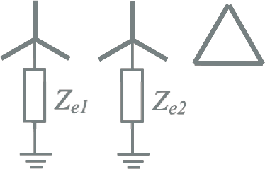

Modellen
Hoofdstuk 8 geeft een beschrijving van de meeste modellen van componenten waaruit een elektriciteitsnet is opgebouwd en van apparaten die op een elektriciteitsnet kunnen zijn aangesloten. De modellen worden gebruikt bij het uitvoeren van loadflow- en kortsluitstroomberekeningen.
- 8.3 Transformatoren
- 8.3.1 Wikkelconfiguratie
- 8.3.2 Overzetverhouding
- 8.3.3 Parameters voor transformatoren met twee wikkelingen
- 8.3.4 Parameters voor transformatoren met drie wikkelingen
- 8.3.5 Inverse impedantie
- 8.3.6 Homopolaire parameters
- 8.3.7 Correctie voor kortsluitberekeningen volgens IEC
- 8.3.8 Inrushstromen
- 8.4 Aardingstransformator en nulpunttransformator
- 8.5 Smoorspoelen
- 8.6 Belasting
- 8.7 Opwekking
- 8.8 Generatoren
- 8.9 Motoren
- 8.10 Converters en gelijkrichters
- 8.11 Windturbinegeneratoren
8 Modellen
Alle berekeningen aan een elektriciteitsnet maken gebruik van specifieke eigenschappen van de componenten, die zijn vastgelegd in modellen. Een model beschrijft het gedrag van een component voor de gewenste berekeningen. Elke soort berekeningen gebruikt een eigen model voor elk componenttype. Dit hoofdstuk beschrijft de modellen voor:
- extern net
- kabel
- transformator
- belasting
- generator
- motor
8.1 Het externe net
Voor de bestudering van een elektriciteitsnet beperkt de expert zich altijd tot het deel dat ontworpen of aangepast moet worden. Dat houdt in dat het netmodel meestal bestaat uit een beperkt gedeelte van het totale net, waarbij het te bestuderen deelnet aangesloten is op een extern net dat de buitenwereld representeert. Het externe net is een vereenvoudiging van alles wat niet gemodelleerd wordt, maar wel van belang is voor de berekening. Dat kan een hoger gelegen stuk distributienet zijn, een middenspanningstransportnet of een hoogspanningsnet. Uitgangspunt hierbij is dat het hoger gelegen voedende net een constant gedrag vertoont in verhouding tot het te bestuderen netdeel. Daarom wordt het vereenvoudigd tot een simpele netvoeding.
Een netvoeding representeert het externe net, waarvoor wordt aangenomen dat de spanning tijdens normaal bedrijf bekend is. Het is niet zo dat de spanning te allen tijde constant is. Indien de spanning over een groot gebied varieert, worden de berekeningen meestal voor de uiterste situaties van maximale en minimale voedingsspanning uitgevoerd. Bij loadflowberekeningen zorgt de netvoeding ervoor dat de spanning op het knooppunt waarop deze is aangesloten constant blijft. Dat wil dus zeggen dat van de spanningsvector de absolute waarde en de hoek vastliggen.
 |
[ |
8.1 |
] |
waarin:
| Ueff | effectieve waarde van de spanning van de netvoeding |
| θ | hoek van de spanningsvector van de netvoeding |
Tijdens een kortsluiting mag de spanning van de netvoeding niet meer constant verondersteld worden zoals in normale situaties. De netvoeding vertegenwoordigt een stuk elektriciteitsnet en dat heeft een bepaalde impedantie. Deze impedantie is met name zichtbaar in kortsluitsituaties en wordt daarom de kortsluitimpedantie genoemd. Tijdens een kortsluiting in een middenspanningsnet kunnen dusdanig grote stromen gaan lopen dat de spanning op het voedingspunt aanzienlijk daalt.
Op een bepaald voedingspunt is de kortsluitimpedantie niet zonder meer bekend. Wel kan het kortsluitvermogen SkQ" of de kortsluitstroombijdrage IkQ" worden gemeten of berekend. Hieruit wordt de kortsluitimpedantie ZQ berekend volgens:
[ |
8.2 |
] |
Hierin is UnQ de nominale gekoppelde spanning van de netvoeding voor de kortsluitsituatie. De factor c is een correctiefactor. Deze is geïntroduceerd voor kortsluitberekeningen volgens de internationale norm IEC 60909. Met deze factor wordt een aantal onzekerheden in het externe net verdisconteerd, zoals:
- willekeurige spanningsvariaties in tijd en plaats
- veranderende transformatortrapstanden
- verwaarlozen van belastingen en capaciteiten
- het subtransiënte gedrag van generatoren en motoren.
De waarde van de factor c hangt af van de berekening en van het spanningsniveau. Tabel 8.1 geeft een overzicht, zoals gehanteerd in IEC 60909.
Tabel 8.1 Spanningsfactoren volgens IEC 60909
Nominale spanning |
Spanningsfactor c voor de berekening van |
|
maximum kortsluitstroom |
minimum kortsluitstroom |
|
Laagspanningssystemen met: • een tolerantie van +6% • een tolerantie van +10% |
1.05 1.10 |
0.95 0.95 |
Middenspanning en hoogspanning |
1.10 |
1.00 |
Voor alle andere berekeningen is de factor c gelijk aan 1.
De weerstand en de reactantie van de netvoedingsimpedantie worden berekend uit de R/X-verhouding:
[ |
8.3 |
] |
Indien de R/X-verhouding niet bekend is, mag volgens IEC 60909 worden aangenomen:
- voor spanningsniveaus hoger dan 35 kV: R/X = 0,0
- voor spanningsniveaus lager dan of gelijk aan 35 kV: R/X = 0,1
In Nederlandse middenspanningsnetten is dichtbij een onderstation een waarde van 0,1 voor de R/X-verhouding redelijk, maar verder in het MS-net wordt deze waarde groter door de R/X-verhouding van de MS-kabels. Voor de voeding van een LS-net wordt in netberekeningen meestal uitgegaan van de voeding aan de MS-zijde van de nettransformator.
Voor berekeningen aan asymmetrische situaties en voor berekeningen aan situaties waarin contact wordt gemaakt met aarde, zoals een fase-aardsluiting, wordt gebruik gemaakt van de symmetrische componentenmethode (zie hoofdstuk 7). De hiervoor gebruikte impedanties zijn de normale impedantie, die gelijk is aan de kortsluitimpedantie, de inverse impedantie, die gelijk is aan de normale impedantie en de homopolaire impedantie, die wordt uitgedrukt in de verhouding van Z0/Z1:
 |
[ |
8.4 |
] |
De verhouding van Z0/Z1 kan worden berekend uit de driefasenkortsluitstroom Ik,3" en de fase-aardkortsluitstroom Ik,1" van de netvoeding:
 |
[ |
8.5 |
] |
De driefasenkortsluitstroom is de kortsluitbijdrage van het externe net. Deze bijdrage wordt voor het aansluitpunt van het externe net met het te bestuderen deelnet bepaald en is niet afhankelijk van het deelnet. De fase-aardkortsluitstroombijdrage van het externe net is echter wel afhankelijk van het te bestuderen net. Daarom is de fase-aardkortsluitstroombijdrage gedefinieerd als de fase-aardkortsluitstroom bij afwezigheid van het te bestuderen net. Indien de netvoeding geen homopolaire stroom kan voeren is de verhouding van Z0/Z1 oneindig. Dit is het geval als de netvoeding een zwevend net is. Indien in het externe net het sterpunt impedantie-geaard is, is de verhouding niet oneindig maar in de grootteorde van 1. De impedantiehoek van de homopolaire impedantie Z0 wordt gelijk verondersteld aan die van de normale impedantie Z1.
8.2 Kabels
De spanningsval over een kabelverbinding wordt volgens de wet van Ohm bepaald door de stroomsterkte door en door de impedantie van de kabel. De impedanties van kabels zijn meestal redelijk beschreven in de brochures van de kabelfabrikanten. Soms ontbreken gegevens, die dan met behulp van de constructiegegevens te berekenen zijn. Sommige impedanties zijn echter afhankelijk van omgevingsfactoren, waardoor het gedrag van een kabelverbinding in de praktijk in bepaalde gevallen moeilijk te voorspellen valt. Deze paragraaf geeft een toelichting op de berekening van de kabelimpedanties en de invloed hierop van de omgeving.
Voor het uitvoeren van kortsluitberekeningen wordt meestal gebruik gemaakt van de methode van symmetrische componenten (hoofdstuk 7). Deze methode maakt het mogelijk om in een symmetrisch driefasesysteem met behulp van een transformatie gemakkelijker asymmetrische belastingen en verstoringen te berekenen.
Voor de gewone symmetrische berekeningen zijn de gegevens van het normale stelsel voldoende. Voor het berekenen van asymmetrische verschijnselen, zoals fase-aardsluitingen, zijn ook de inverse en homopolaire gegevens van onder meer kabels en transformatoren noodzakelijk. De inverse gegevens zijn in de meeste gevallen gelijk aan de normale gegevens. De homopolaire gegevens zijn niet gelijk aan de normale gegevens en hangen bij kabels af van onder meer de aarding en de ligging in de grond. Ook de nabijheid van andere geleidende objecten, zoals stalen buizen of tramrails heeft invloed op de homopolaire impedantie. Om deze reden wordt de homopolaire impedantie van kabels meestal niet door de fabrikanten gespecificeerd.
Een kabel kan worden gemodelleerd met een normale, een inverse en een homopolaire impedantie. De normale impedantie is gelijk aan de bedrijfsimpedantie. Deze is meestal wel bekend en kan worden afgeleid uit brochures en naamplaatgegevens. De inverse impedantie van kabels is gelijk aan de normale impedantie. De werkelijke homopolaire impedantie kan alleen door meting van het bestaande circuit verkregen worden. Hoogspanningslijnen worden altijd gemeten en de modelimpedanties zijn in die gevallen goed bekend bij de netbeheerder. De impedanties van MS-kabelverbindingen zijn in de meeste gevallen niet gemeten. Voor een kabel is slechts een beperkte algemene richtlijn te geven voor de waarde van de impedanties. De impedanties zijn onder meer afhankelijk van:
- uitvoering: drie éénfasekabels of één driefasenkabel
- ligging: onderlinge afstand in plat vlak of in driehoek
- aanwezigheid van andere geleidende objecten zoals andere kabels of pijpleidingen.
Omdat de homopolaire gegevens worden beïnvloed door de liggingsomstandigheden en de omgeving, kunnen deze het best gemeten worden aan de bestaande verbinding voordat deze in bedrijf genomen wordt. Voor planningsdoeleinden moeten deze waarden geschat worden. Indien geen betrouwbare waarden beschikbaar zijn, moet een schatting gemaakt worden.
Samenvattend zijn van de kabel te onderscheiden:
- normale impedantie: Z1 = R1 + jX1
- homopolaire impedantie: Z0 = R0 + jX0
- normale capaciteit: C1
- homopolaire capaciteit: C0
8.2.1 Normale impedantie
De impedantie voor de normale component bestaat uit de normale weerstand en de normale reactantie. De normale impedantie wordt gebruikt voor alle berekeningen.
Normale weerstand
De normale weerstand R1 is gelijk aan de bedrijfsweerstand. Deze wordt meestal door de fabrikant gespecificeerd als RDC,20, de gelijkstroomweerstand bij 20°C. Indien deze waarde niet bekend is, kan deze worden opgezocht in de standaard IEC 60228 'Conductors of insulated cables', in de tabellen voor Class 1 (Solid conductors) en Class 2 (Stranded conductors). Soms geeft de fabrikant de wisselstroomweerstand voor de gegeven frequentie en de maximum bedrijfstemperatuur.
Bij kortsluitberekeningen volgens IEC 60909 moet voor berekening van de initiële kortsluitstroom de weerstand bij 20°C gebruikt worden. Bij loadflowberekeningen kan daarvan afgeweken worden. Soms geeft de fabrikant de weerstand op bij maximum geleidertemperatuur. Het is echter niet altijd reëel om met de weerstand te werken bij de maximum geleidertemperatuur (50°C voor GPLK kabels, 65°C voor Alkudia kabels en 90°C voor XLPE kabels). De meeste kabels zijn immers niet continu vol belast, waardoor de temperatuur nooit de maximum waarde zal bereiken. Een bedrijfsspecifieke waarde kan door de organisatie van de gebruiker zelf worden vastgesteld. De geleiderweerstand wordt dan berekend met onderstaande formule.
[ |
8.6 |
] |
waarin:
| RDC,20 | geleider gelijkstroomweerstand bij 20 graden Celcius, volgens opgave fabrikant (W/m) |
| α20 | temperatuurcoëfficiënt (0,00403 per graad Celsius voor aluminium; 0,00393 per graad Celsius voor koper) |
| θ | geleidertemperatuur (graden Celsius) |
In laagspanningsnetten heeft de geleiderweerstand de grootste invloed en speelt de zelfinductie een veel kleinere rol. Daarom is de invloed van de temperatuur op de spanningen voornamelijk beperkt tot de laagspanningsnetten. De temperatuurcoëfficiënt α20 leidt ongeveer tot een afwijking van 0,4 % van de geleiderweerstand per graad en tot een even zo grote afwijking van de spanningsval over de betreffende kabel. Dat betekent dat een verhoging van de geleidertemperatuur van 30 graden naar 55 graden Celsius leidt tot een verandering van de spanningsval over de kabel van ongeveer 10 %.
De berekende waarde voor R' is de voor de temperatuur gecorrigeerde gelijkstroomweerstand. Formeel moet deze berekende waarde nog gecorrigeerd worden voor het skin-effect en het proximity-effect om de wisselstroomweerstand te krijgen. Voor standaard kabels geldt:
 |
[ |
8.7 |
] |
met:
| ys | skin-effect factor |
| yp | proximity-effect factor |
Het skin-effect wordt veroorzaakt doordat in een geleider de stroom aan het geleideroppervlak wil gaan vloeien, waardoor de stroomdichtheid in het midden van de geleider kleiner is dan aan het oppervlak en waardoor de effectieve weerstand toeneemt. De skin-effect factor kan berekend worden volgens IEC 60287 met onderstaande formule:
[ |
8.8 |
] |
met:
f = frequentie (Hz)
Waarden voor ks worden gegeven door IEC 60287. Voor ronde geslagen geleiders is ks gelijk aan 1. Voor ronde massieve aluminium geleiders wordt 1 aangenomen.
Het proximity-effect wordt veroorzaakt in naburige geleiders, waarin als gevolg van het magnetische veld gelijkgerichte stromen elkaar afstoten. Als gevolg van de stroomverdringing neemt de effectieve weerstand toe. De proximity-effect factor is afhankelijk van de ligging van de geleiders ten opzichte van elkaar en kan berekend worden volgens IEC 60287 met onderstaande formule:
[ |
8.9 |
] |
met:
| dc | diameter van de geleider (mm) |
| s | hart op hart afstand van naastgelegen geleiders (mm) |
Waarden voor kp worden gegeven door IEC 60287. Voor ronde geslagen geleiders is kp gelijk aan 1. Voor ronde massieve aluminium geleiders wordt 1 aangenomen.
Tabel 8.2 geeft als voorbeeld de berekende waarden van het skin- en proximity-effect van enkele LS- en MS-kabels. De tabel illustreert hoe het skin-effect afhangt van de gelijkstroomweerstand: beneden een geleiderdoorsnede van 240 mm2 is de factor klein tot verwaarloosbaar en daarboven wordt de factor snel groter. Bovendien is het skin-effect bij kabels met Cu-geleider groter dan bij kabels met Al-geleider. Ook het proximity-effect neemt toe bij afnemende gelijkstroomweerstand. Bij de enkeladerige kabels van 1000 mm2 geleiderdoorsnede is goed te zien dat het proximity-effect bij ligging in driehoeksformatie, waarbij de kabels elkaar raken, veel groter is dan bij ligging in een plat vlak, waarbij de kabels elkaar niet raken (70 mm tussenruimte).
Tabel 8.2 Skin- en proximity-effect bij enkele distributiekabels
Kabeltype |
Skin-effect factor |
Proximity-effect factor |
3x240 mm2 Al 0,6/1 kV |
0,004 |
0,011 |
3x240 mm2 Cu 0,6/1 kV |
0,010 |
0,030 |
3x50 mm2 Cu 6/10 kV |
<0,001 |
<0,001 |
3x95 mm2 Cu 6/10 kV |
0,001 |
0,002 |
3x150 mm2 Cu 6/10 kV |
0,003 |
0,005 |
3x240 mm2 Cu 6/10 kV |
0,008 |
0,015 |
3 x 1x240 mm2 Al 6/10 kV, driehoek |
0,003 |
0,003 |
3 x 1x630 mm2 Al 6/10 kV, driehoek |
0,022 |
0,031 |
3 x 1x800 mm2 Al 6/10 kV, driehoek |
0,036 |
0,053 |
3 x 1x240 mm2 Cu 6/10 kV, driehoek |
0,009 |
0,010 |
3 x 1x1000 mm2 Cu 6/10 kV, driehoek |
0,148 |
0,187 |
3 x 1x1000 mm2 Cu 6/10 kV, plat vlak |
0,148 |
0,037 |
Normale reactantie
De normale reactantie kan eenvoudig worden afgeleid uit de specificatie van de inductie in de brochure van de fabrikant. Deze is voor drie- en vieraderige kabels onafhankelijk van externe omstandigheden. Bij enkeladerige midden- en hoogspanningskabels is de ligging (driehoek of plat vlak) van belang.
In het geval dat de inductie niet gegeven is, kan deze berekend worden. De inductie L van een ideale ronde oneindig lange geleider, in het geval van twee parallelle geleiders, kan worden berekend volgens (Heinhold, 1999):
 |
[ |
8.10 |
] |
waarin:
| µ0 | permeabiliteitsconstante in vacuum: µ0 = 4π10-7 H/m |
| s | hartafstand van de geleiders in driehoeksformatie (mm) of 3√2 = 1.26 maal de hartafstand van de geleiders in plat vlak |
| ρ | geometrisch gemiddelde straal van de geleider: ρ = e-1/4 dc/2 ≅ 0,779 dc/2 mm |
| dc | geleiderdiameter (mm) |
Invullen van de permeabiliteitsconstante en de factor voor de geometrisch gemiddelde diameter van de geleider levert de vereenvoudigde formule:
 mH/km mH/km |
[ |
8.11 |
] |
Uiteindelijk wordt de normale reactantie berekend door de inductie te vermenigvuldigen met de hoekfrequentie:
 Ω/km Ω/km |
[ |
8.12 |
] |
Dit geldt ook voor kabels met scherm en voor kabels waarvan de geleiderdoorsnede niet rond is. De normale impedantie kan ook worden berekend met behulp van een op finite-elementberekening gebaseerd elektromagnetisch veldsterkteprogramma.
Normale capaciteit
De capaciteit speelt voornamelijk een rol in de blindvermogenshuishouding. Hoe hoger het spanningsniveau, des te groter is de invloed. Ook bepaalt de capaciteit het diëlektrische verlies dat in verband met de warmteontwikkeling een beperkende factor is voor de maximale stroombelastbaarheid van kabels voor spanningsniveaus van 50 kV en hoger. In geval van zwevende MS-netten met een geïsoleerd sterpunt speelt de capaciteit een rol bij de grootte van de stroom in geval van een fase-aardsluiting. Bij LS-kabels is de capaciteit voor de meeste loadflow- en kortsluitberekeningen niet belangrijk.
De normale capaciteit van kabels is doorgaans gespecificeerd door de kabelfabrikanten. Deze kan ook berekend worden met behulp van onderstaande formule voor enkeladerige kabels en meeraderige kabels met afzonderlijke schermen (Happoldt, 1978):
| μF/km | [ |
8.13 |
] |
met:
| ε0 | absolute permittiviteit: 8.854 · 10-12 F/m |
| εr | relatieve permittiviteit van de isolatie (2,5 voor XLPE; 3,6 voor massa-geïmpregneerd papier) |
| Di | diameter over de isolatie, exclusief isolatiescherm (mm) |
| dc | diameter over de geleider, inclusief geleiderscherm (mm) |
De berekening voor kabels met gemeenschappelijk scherm en voor gordelkabels is vrij lastig. De literatuur (Heinhold, 1999) geeft een formule waar hier verder niet op ingegaan wordt.
8.2.2 Inverse impedantie
De drieaderige kabels die in middenspanningsnetten worden toegepast zijn altijd driefasensymmetrisch opgebouwd. Dat heeft tot gevolg dat de inverse impedantie (Z2) gelijk is aan de normale impedantie (Z1). Een circuit met drie enkelfasige kabels die in driehoekformatie zijn gelegd is ook altijd driefasensymmetrisch. Indien het circuit bestaat uit drie enkelfasige kabels in plat vlak is dat niet het geval. Ook laagspanningskabels met drie fasegeleiders en een nulgeleider zijn niet zuiver driefasensymmetrisch. De afwijkingen van het ideale beeld zijn gering en voldoende klein om aan te nemen dat voor de meeste toepassingen, zoals loadflow- en kortsluitberekeningen, de inverse impedantie gelijk genomen mag worden aan de normale impedantie. Bij alle kabelverbindingen wordt daar dan ook van uit gegaan.
8.2.3 Verlies
Het verlies in een kabel is opgebouwd uit twee componenten. Het grootste deel wordt veroorzaakt door het stroomtransport en is recht evenredig met de weerstand van de kabel:
 |
[ |
8.14 |
] |
Het tweede deel is het diëlektrische verlies en wordt veroorzaakt door het wisselende elektrische veld in de isolatie. Het verlies wordt alleen berekend voor afgeschermde kabels en is recht evenredig met de capaciteit:
 |
[ |
8.15 |
] |
Hierin is tan(δ) de verliesfactor van de isolatie. Waardes voor veel voorkomende isolatiematerialen zijn opgenomen in de norm IEC 60287.
Het diëlektrische verlies wordt bij netberekeningen meestal verwaarloosd. Voor hoogspanningskabels heeft het invloed op de temperatuur en daarmee op de stroombelastbaarheid.
8.2.4 Maximale stroombelastbaarheid
De maximale stroombelastbaarheid van kabels is sterk afhankelijk van een aantal omgevingsfactoren (zie paragraaf 4.1.5). De belangrijkste invloed hebben de specifieke warmteweerstand van de bodem, de bodemtemperatuur en de opwarming door parallelle kabelcircuits en warme leidingen. Ook wegboringen hebben slechte thermische eigenschappen en moeten apart worden bekeken. De methode om de maximale stroombelastbaarheid te berekenen is vastgelegd in de internationale norm IEC 60287. Bij het gebruik van deze berekening moet rekening worden gehouden met de 'hot spot', dat wil zeggen die plek in de totale kabelverbinding met de hoogste specifieke warmteweerstand en de hoogste bodemtemperatuur.
Indien de constructiegegevens van de kabel niet bekend zijn en men genoegen neemt met een vlottere benadering, kan uitgegaan worden van de door de fabrikant (of in een norm) gespecificeerde nominale belastbaarheid. Hierop kan in geval van afwijkende liggingomstandigheid een aantal correctiefactoren worden toegepast. De correctiefactoren worden vaak in de brochure van de fabrikant vermeld. Ook kunnen deze aan een norm, zoals NEN 1010 worden ontleend.
Er zijn correctiefactoren voor afwijkende omstandigheden bij ondergrondse en bovengrondse installatie. Voor ondergrondse installatie zijn er correctiefactoren voor afwijkingen in:
- bodemtemperatuur
- liggingdiepte
- ligging is een buis of direct in de grond
- specifieke thermische weerstand van de grond
- meerdere parallelle circuits in hetzelfde vlak
Voor bovengrondse installatie zijn er correctiefactoren voor afwijkingen in:
- luchttemperatuur
- zoninstraling en kleur van de buitenmantel
- installatiemethode en meerdere parallelle circuits
Voor andere afwijkingen moet een specifieke berekening volgens IEC 60287 worden uitgevoerd. De correctiefactoren uit de NEN 1010 zijn toepasbaar voor de genoemde situaties en geven een voldoende nauwkeurig resultaat. Hoewel de norm NEN 1010 is geschreven voor laagspanningskabels, zijn de correctiefactoren uit die norm ook toepasbaar voor midden- en hoogspanningskabels, want warmtetechnisch bekeken heeft het spanningsniveau geen invloed.
De correctiefactor voor ondergrondse kabels is samengesteld uit separate factoren:
| f = fT • fL • fG • fc | [ |
8.16 |
] |
Hierin zijn:
| fT | correctiefactor voor afwijkende bodemtemperatuur |
| fL | correctiefactor voor afwijkende liggingdiepte |
| fG | correctiefactor voor afwijkende thermische weerstand |
| fc | correctiefactor voor meerdere parallelle circuits |
Het gebruik van de correctiefactoren wordt toegelicht aan de hand van een enkele ondergronds geïnstalleerde drieaderige Cu XLPE geïsoleerde kabel met een buitendiameter van 57 mm. De totale correctiefactor voor het omrekenen van de maximale stroombelastbaarheid, zoals opgegeven door de fabrikant, naar de maximale stroombelastbaarheid, die hoort bij afwijkende liggingomstandigheid, kan berekend worden met de correctiefactoren van de NEN 1010:
Tabel 8.3 Correctiefactoren voor afwijkende liggingsomstandigheden
Liggingomstandigheden |
Fabrikant |
Afwijkend |
Correctiefactor |
Bodemtemperatuur: |
20 °C |
25 °C |
fT = 0,9632 |
Installatiediepte: |
1 m |
0,7 m |
fL = 1,0479 |
Specifieke thermische grondweerstand: |
1 K·m/W |
2,5 K·m/W |
fG = 0,6662 |
De totale correctiefactor wordt dan:
f = fT • fL • fG • fc = 0,96 • 1,05 • 0,67 • 1,00 = 0,67
Bij een nominale continue stroom volgens de fabrikant van 380 A, wordt dan de nominale continue stroom voor de afwijkende liggingomstandigheid: 255 A.
8.2.5 Homopolaire impedantie
De impedantie voor de homopolaire component bestaat uit de homopolaire weerstand en de homopolaire reactantie. De homopolaire impedantie wordt gebruikt voor alle berekeningen waar een retourstroom langs andere weg vloeit dan de fasengeleiders, zoals nulgeleiders, afscherming en aarde. De homopolaire impedantie van een circuit wordt bepaald door enerzijds de impedantie van de kabel zelf en anderzijds door de impedantie van het retourcircuit. In deze paragraaf wordt eerst ingegaan op de homopolaire impedantie van de kabel zelf.
Homopolaire weerstand
In het algemeen geldt voor een kabel dat de homopolaire weerstand per fase gelijk is aan de wisselstroomweerstand van de fasegeleider, zonder de invloed van het proximity-effect maar met de invloed van het skin-effect, waarbij de invloed van de retourgeleider wordt opgeteld (BICC, 1990):
- drieaderige kabels: drie maal de weerstand van de metalen afscherming, eventueel parallel aan de weerstand van de armering
- SL-type kabels (elke ader separaat afgeschermd): de weerstand van een metalen afscherming, parallel met drie maal de weerstand van de armering.
- enkeladerige kabels: de weerstand van de metalen afscherming (meestal geen armering).
Voor in Nederland veelvuldig gebruikte kabels betekent dit:
LS drieaderige kabel met gezamenlijk scherm: R0 = RF + 3(RS//RA)
LS vieraderige kabel met gezamenlijk scherm: R0 = RF + 3(RS//RN//RA)
MS GPLK drieaderige kabel met gezamenlijk scherm: R0 = RF + 3(RS//RA)
MS XLPE drieaderige kabel met gezamenlijk scherm: R0 = RF + 3(RS//RA)
MS XLPE drieaderige kabel met afzonderlijke schermen: R0 = RF + (RS//3RA)
MS XLPE enkeladerige kabel met scherm: R0 = RF + RS
waarin:
| RF | weerstand van de fasegeleider, gelijk aan: R'(1+ys) |
| RN | weerstand van de nulgeleider |
| RS | weerstand van het scherm |
| RA | weerstand van de armering |
In het algemeen geldt het volgende. Sommige drieaderige kabels zijn per fase uitgerust met een afzonderlijke afscherming die in staat is een éénfase kortsluitstroom te geleiden. In dat geval moet de weerstand van die afscherming worden gebruikt. Wanneer er sprake is van één afscherming, gezamenlijk voor de drie geleiders, moet drie maal de weerstand van die afscherming worden gebruikt. Indien beide typen gecombineerd voorkomen, zoals een afscherming per fase en een gezamenlijke armering moet het voorbeeld van de SL-type kabel worden gebruikt. In principe moeten de weerstanden Ri van alle individuele retourpaden separaat worden berekend en moet de equivalente weerstand van al deze parallel geschakelde retourpaden worden bepaald. De homopolaire weerstand is dan RF plus deze waarde, vermenigvuldigd met 3.
 |
[ |
8.17 |
] |
Hieruit blijkt dat de homopolaire weerstand nooit kleiner is dan de normale weerstand.
Bijvoorbeeld, een MS XLPE drieaderige kabel met afzonderlijke schermen, kent de drie schermen en de armering als retourpaden. Invullen in bovenstaande vergelijking levert:
 |
[ |
8.18 |
] |
De weerstanden worden berekend uit het geleidende oppervlak van de doorsnede en de specifieke weerstand van de betreffende geleiders. Voor een scherm wordt het geleidende oppervlak berekend uit de diameter en de dikte. Voor afzonderlijke draden wordt de weerstand bepaald uit die van een enkele draad, gedeeld door het aantal draden en gecorrigeerd voor de spoed. Bij kabels met een meanderend scherm is de lengte van het scherm groter dan die van de totale kabel.
De homopolaire weerstand is, net als de normale weerstand, afhankelijk van de kabeltemperatuur en kan berekend worden zoals aangegeven in paragraaf 8.2.1.
Homopolaire inductie en reactantie
De homopolaire reactantie van een kabel kan meestal niet uit de brochure van de fabrikant worden herleid. Dit komt doordat de homopolaire impedantie van een circuit in grote mate wordt beïnvloed door de impedantie van het retourpad. In dit geval kan de homopolaire impedantie worden bepaald met een op finite-elementberekening gebaseerd elektromagnetisch veldsterkteprogramma.
Voor het geval dat het retourcircuit bestaat uit alleen de eigen nul, scherm en armering kan de homopolaire reactantie per fase van een enkeladerige kabel redelijk eenvoudig berekend worden. Door in de formule voor de berekening van de normale inductie twee maal de geleiderafstand te vervangen door de diameter van de metalen afscherming, ontstaat de formule voor de homopolaire inductie per fase.
[ |
8.19 |
] |
waarin:
| µ0 | permeabiliteitconstante in vacuüm: µ0 = 4π10-7 H/m |
| Ds | gemiddelde diameter van de metalen afscherming (mm) |
| ρ | geometrisch gemiddelde straal van de geleider: ρ = e-1/4 dc /2 ≅ 0,779 dc /2 mm |
| dc | geleiderdiameter (mm) |
Invullen van de permeabiliteitconstante en de factor voor de geometrisch gemiddelde diameter van de geleider levert de homopolaire inductie per fase van een enkeladerige kabel (BICC, 1990):
 |
[ |
8.20 |
] |
Voor drieaderige kabels met een gezamenlijke afscherming kan de homopolaire inductie per fase berekend worden met behulp van onderstaande vergelijking. Hierin komt een factor 3 voor om de reactantie van het gezamenlijke scherm om te rekenen naar reactantie per fase.
 |
[ |
8.21 |
] |
waarin:
| Ds | gemiddelde diameter van de metalen afscherming over de gezamenlijke aders (mm) |
| gmd | geometrische gemiddelde diameter van de geleiders in de kabel (mm). |
De waarde van gmd mag gelijk genomen worden aan 0,75 maal Dogg, de diameter van de cirkel die raakt aan de drie gezamenlijke geleiders in de kabel, ervan uitgaande dat de geleiders cirkelvormig zijn (BICC, 1990). De diameter van de cirkel over de samengeslagen geleiders kan als volgt berekend worden uit de diameter over de geïsoleerde geleider (Di) en de geleiderdiameter (dc):
| mm | [ |
8.22 |
] |
Uiteindelijk wordt de normale reactantie berekend door de inductie te vermenigvuldigen met de hoekfrequentie:
| Ω/km | [ |
8.23 |
] |
Indien de kabel geen scherm heeft, zoals bij sommige LS-kabels, kan de homopolaire impedantie worden berekend vanuit de resultaten van een finite-elementberekening met een elektromagnetisch veldsterkteprogramma. Dit geldt ook voor kabels waarvan de geleiderdoorsnede niet rond is.
Homopolaire capaciteit
De kleine afstanden tussen de geleiders onderling in een kabel en tussen geleiders en afscherming en de diëlektrische constante van het isolatiemedium zorgen ervoor dat de capaciteit groter is dan bij bovengrondse lijnen. De kabelcapaciteiten liggen in de grootte van 0,1 tot 1,2 µF/km. De homopolaire capaciteit is afhankelijk van de constructie van de kabel.

Figuur 8.1 Capaciteiten in diverse kabelsoorten
Tabel 8.4 geeft een benadering van de normale capaciteit (C1) en de homopolaire capaciteit (C0) voor de kabelsoorten van figuur 8.1 (Happoldt, 1978). In deze tabel is CE de capaciteit tussen een geleider en het scherm en is C de capaciteit tussen twee geleiders.
Tabel 8.4 Normale en homopolaire capaciteiten
Type kabel |
C1 |
C0 |
Gordelkabel |
CE + 3 C |
0,6 C1 |
Gescheiden afschermingen |
CE |
C1 |
Enkeladerige kabel |
CE |
C1 |
Hieruit volgt dat de homopolaire capaciteit eenvoudig uit te drukken is in de capaciteit van het normale systeem.
8.2.6 Invloed aardelektrode en aarde
De homopolaire impedantie wordt in belangrijke mate beïnvloed door het retourpad. Het retourpad bestaat uit het pad door de kabel zelf (onder andere de afscherming) met parallel daaraan het pad door de aarde. Het pad door de aarde bestaat uit de aardelektrodes (minimaal twee) en het pad door de aarde zelf. Het retourpad door de aarde loopt zo dicht mogelijk langs de betreffende kabel. Hierdoor is de weerstand van het pad door de aarde meestal anders dan puur theoretisch berekend. Bovendien heeft het retourpad door aarde een reactieve component, die bepaald wordt door de omvatte flux en de elektromagnetische koppeling met andere geleidende voorwerpen in de bodem. Het is hierdoor niet eenvoudig te voorspellen hoe groot de invloed van de parallelschakeling van het retourpad door de aarde op de totale homopolaire impedantie is. In zijn algemeenheid geldt wel dat parallelschakeling van de aarde de homopolaire weerstand verkleint en de homopolaire reactantie vergroot.
De aardelektrode wordt gemodelleerd met een weerstand naar de 'verre aarde'. De weerstand van de aardelektrode is afhankelijk van de specifieke bodemweerstand ρ en de fysische afmetingen van de aardelektrode. Voor een enkele ronde penvormige aardelektrode geldt onderstaande formule voor berekening van de aardverspreidingsweerstand (Happoldt, 1978):
 Ω Ω |
[ |
8.24 |
] |
met:
| ρ | specifieke bodemweerstand (Ωm) |
| L | lengte van de verticale elektrode in de grond (m) |
| d | diameter van de aardelektrode (m) |
De specifieke bodemweerstand is afhankelijk van het bodemmateriaal en de hoeveelheid vocht in en temperatuur van de bodem. Tabel 8.5 geeft een overzicht voor de materialen.
Tabel 8.5 Specifieke bodemweerstand
Bodemsoort |
ρ minimaal [Ωm] |
ρ maximaal [Ωm] |
Veen |
5 |
40 |
Klei |
20 |
200 |
Zand |
200 |
2500 |
Kiezel |
2000 |
3000 |
Het verschil tussen de minimale en maximale waarden van de specifieke bodemweerstand wordt bepaald door het gewichtspercentage van het in het materiaal aanwezige vocht. Dit kan gemeten worden tijdens het slaan van de elektrode, ervan uitgaande dat de meting representatief is voor de laagste vochtigheid van de bodem gedurende het hele jaar.
In Nederland is de aardelektrode vaak een geslagen elektrode van rond koperdraad met een doorsnede van 50 mm2 (d = 0,0075 m). Er worden ook meerdere soorten toegepast, zoals massief staal (rond, ster- of kruisvormig) voorzien van een goedhechtende koperlaag aan de oppervlakte en een verzinkte rond stalen variant.
Voor het maken van een aardelektrode met een aardverspreidingsweerstand kleiner dan 1 Ω moeten er vaak meerdere parallel elektroden geslagen worden, op ruime afstand van elkaar. Volgens bovenstaande formule is de aardverspreidingsweerstand voor een aardelektrode van 10 m en een diameter van 7,5 mm in bodem met een specifieke weerstand van 100 Ωm gelijk aan 13,7 Ω. De literatuur (Happoldt, 1978) geeft formules voor het berekenen van parallelle of andere vormen van aardelektroden.
8.2.7 Meting van de homopolaire impedantie
Aangezien de homopolaire impedantie van sterkstroomkabels niet met grote nauwkeurigheid berekend kan worden, zijn metingen noodzakelijk. Met behulp van deze metingen uit de praktijk kan een schatting gedaan worden voor waarden die bij de planning van een nieuw tracé bruikbaar zijn. Overigens laten talrijke praktijkmetingen zien dat de spreiding in de meetresultaten aanzienlijk is.
De symmetrische componenten transformatie beschrijft de relatie tussen de stromen in het componentnetwerk en het fysieke stelsel (paragraaf 7.5).
[ |
8.25 |
] |
Hieruit blijkt dat de homopolaire stroom gelijk is aan éénderde van de som van de drie fasenstromen. In geval van een driefasensymmetrisch systeem met driefasensymmetrische stromen, zal de homopolaire stroom nul zijn. Indien de drie fasestromen niet driefasensymmetrisch zijn, is de stroom, die over het retourpad vloeit, gelijk aan de som van de drie fasenstromen en volgens vergelijking 8.25 gelijk aan 3I0. Hieruit volgt de manier om de homopolaire impedantie te meten, door middel van het aanbrengen van een homopolaire spanning, zoals aangegeven in figuur 8.2.
De homopolaire impedantie wordt gemeten met behulp van een voeding met een homopolair stelsel. Dit wordt bereikt door de fasen aan beide uiteinden parallel te schakelen. Aan het uiteinde wordt deze parallelschakeling met de retourleiding verbonden en eventueel geaard. De retourimpedantie, bestaande uit de parallelschakeling van de retourleiding van de kabel en het retourpad door de aarde, wordt in figuur 8.2 voorgesteld door ZE. Aan het begin van het circuit wordt de parallelschakeling éénfasig tegen aarde gevoed. De homopolaire impedantie is dan het quotiënt van spanning en stroom. Indien de kabelmantels aan beide uiteinden geaard zijn, vindt een stroomopdeling plaats tussen de mantels en de aarde. Bij éénzijdige aarding (op de andere zijde zijn de mantels zwevend en niet doorverbonden met mantels van andere kabels) gaat de retourstroom alleen door de aarde. De stroom door de aarde wordt sterk beïnvloed door andere geleidende voorwerpen in of op de aarde, zoals andere kabelmantels, metalen gas- en waterleidingen en dergelijke. Omdat de homopolaire impedantie dus mede afhankelijk is van de omgeving van de kabel kan voor een bepaald kabeltype een algemeen geldige homopolaire impedantie niet worden aangegeven. Soms wordt een homopolaire impedantie aangegeven onder de voorwaarde dat de retourstroom alleen door de mantels vloeit. Bij drie éénfase-kabels zijn deze mantelstromen gelijk.

Figuur 8.2 Meting van de homopolaire impedantie
In een driefasensymmetrisch net is ZA = ZB = ZC = ZL, zodat IA = IB = I C = I0. Dan volgt voor de meting:
 |
[ |
8.26 |
] |
Hieruit volgt voor de homopolaire impedantie:
[ |
8.27 |
] |
en voor de meting:
 |
[ |
8.28 |
] |
Voor planningsdoeleinden kan de homopolaire impedantie geschat worden, afhankelijk van de situatie als een constante waarde of als een factor van de normale impedantie.
Samenvattend wordt de homopolaire impedantie van een kabelverbinding bepaald door het totale circuit van de homopolaire stroom. Het totale circuit bestaat uit de heenweg (de fasegeleiders) en de terugweg (de nulgeleiders, de afscherming en armering van de kabel plus de aarde via de aardelektrodes (onder andere in middenspanningsruimten) en eventueel ander contact met aarde. In de aarde aanwezige geleidende materialen (andere kabels, metalen pijpen en spoorrails) kunnen de homopolaire impedantie sterk beïnvloeden.
Het is mogelijk de homopolaire impedantie van een kabel te berekenen voor het geval dat het retourcircuit bestaat uit mantel en eventueel nulgeleider. Dit is ook de waarde die de fabrikant in de meeste gevallen opgeeft. Indien de retourstroom echter (zoals in de meeste praktische gevallen) ook door de aarde vloeit, zal de homopolaire weerstand afnemen en de homopolaire reactantie toenemen. De waarde is voor die gevallen zeer moeilijk te berekenen en de berekening is meestal onnauwkeurig.
Voor enkele kabeltypen en situaties zijn de homopolaire impedanties berekend voor het geval het retourpad alleen via de kabel zelf loopt. Alle gegeven waarden dienen alleen ter informatie. De verhoudingen van de homopolaire tot de normale impedanties zijn hieronder samengevat. De resultaten variëren voor kabels van kleine naar grote geleiderdiameter.
Tabel 8.6 Homopolaire impedantie bij retourpad alleen door de kabel zelf
Type kabel |
Retour nul |
Retour nul + mantel |
||
R0/R1 |
X0/X1 |
R0/R1 |
X0/X1 |
|
LS 4-ad kabel (25..300 mm) |
4,0 |
3,5..4,0 |
2,5..3,0 |
1,5..2,0 |
Type kabel |
Retour mantel |
|
R0/R1 |
X0/X1 |
|
MS gordelkabel (25..300 mm) |
4..15 |
1,7..1,4 |
MS 3-ad XLPE (50..300 mm) |
7..20 |
1 |
MS 1-ad XLPE (95..400 mm) |
7..18 |
0,4..0,3 |
8.2.8 Uitgebreid model voor de laagspanningskabel
Voor berekeningen aan de aanrakingsveiligheid zijn specifieke kabelgegevens nodig, die niet zonder meer uit tabellen van de kabelfabrikanten af te leiden zijn. Die tabellen bevatten alleen gegevens betreffende het gebruik van de kabel in normale omstandigheden en het gedrag bij kortsluiting. Bij een éénfase aardsluiting echter, heeft de kortsluitstroom door inductie invloed op de spanning in de overige geleiders. De elektromagnetische koppelingen tussen de geleiders van de kabel onderling en tussen de geleiders en het aardscherm zijn niet gedocumenteerd en moeten berekend worden. Het betreft PVC en GPLK kabels met sectorvormige en ronde geleiders, zowel koper als aluminium, zowel met als zonder hulpaders. In deze paragraaf worden de impedanties van de kabels berekend met een programma voor analyse van elektrische en magnetische velden in rotatiesymmetrische doorsneden.
De laagspanningskabel is opgebouwd uit:
- geleiders en hulpaders,
- meestal geïsoleerd met kunststof,
- bijeengehouden door een binnenmantel,
- vaak omgeven door een aardscherm,
- beschermd door een buitenmantel,
- waarbij soms nog armering is aangebracht.
Een typische doorsnede van de geleidende onderdelen van een LS-kabel met cirkelvormige en met sectorvormige geleiders toont figuur 8.3 voor een kabel van het type GPLKh 4x35 Cu rond + 4x2,5 Cu en van het type GPLKh 4x95 Cu sector + 4x6 Cu. Van binnen naar buiten zijn zichtbaar: hoofdaders en hulpaders met isolatie, scherm, vulling, wapening en buitenmantel.

Figuur 8.3 Kabelopbouw van LS-kabels met ronde en sectorvormige geleiders
Duidelijk zichtbaar is dat de raakvlakken tussen de geleiders onderling en tussen geleiders en mantel in het geval van de sectorvormige geleiders veel groter zijn dan bij de ronde geleiders. Als gevolg is bij de sectorvormige geleiders de mutuele koppeling sterker.
Bij onderscheid van fasegeleiders, nulgeleider, hulpgeleiders en scherm zijn in de laagspanningskabel maximaal 11 verschillende impedanties te onderscheiden:
| Zc | langsimpedantie hoofdgeleidercircuit (fase en nul) |
| Zcc,n | mutuele impedantie naast elkaar gelegen hoofdgeleiders |
| Zcc,t | mutuele impedantie tegenover elkaar gelegen hoofdgeleiders |
| Ze | langsimpedantie schermcircuit |
| Zce | mutuele impedantie hoofdgeleider en scherm |
| Zh | langsimpedantie hulpgeleidercircuit |
| Zch,n | mutuele impedantie naast elkaar gelegen hoofd- en hulpgeleiders |
| Zch,t | mutuele impedantie tegenover elkaar gelegen hoofd- en hulpgeleiders |
| Zhh,n | mutuele impedantie 'naast elkaar gelegen' hulpgeleiders |
| Zhh,t | mutuele impedantie 'tegenover elkaar gelegen' hulpgeleiders |
| Zhe | mutuele impedantie hulpgeleider en scherm |
In matrixvorm:

De kabel bestaat uit 3 gelijke fasen- en nulgeleiders. Indien de nulgeleider afwijkt van de fasegeleiders wijzigen in de matrix de getallen in kolom 4 en rij 4. Eventueel kunnen 4 gelijke hulpaders aanwezig zijn. Indien de hulpaders of de geleidende mantel ontbreekt, zijn de betreffende impedanties niet in de matrix aanwezig.
De bedrijfsimpedantie van een kabel is niet dezelfde als de langsimpedantie van een hoofdgeleidercircuit, maar wordt berekend uit de individuele impedanties van de gehele kabel als gesloten systeem. Zo is de bedrijfsimpedantie uit te rekenen uit de langsimpedantie van een hoofdgeleidercircuit Zc en het gemiddelde van de mutuele impedanties van een fasegeleider naar een aanliggende fasegeleider Zcc,n en van een fasegeleider naar een tegenoverliggende fasegeleider Zcc,t.
 |
[ |
8.29 |
] |
Evenzo kan de interne homopolaire impedantie van de kabel berekend worden:
 |
[ |
8.30 |
] |
8.3 Transformatoren
Transformatoren bestaan in vele soorten en maten. Voor de koppeling tussen HS- en MS-niveau worden voedingstransformatoren met nominale vermogens van 10 tot 70 MVA toegepast. Dit zijn meestal transformatoren met twee wikkelingen, maar in sommige gevallen worden ook driewikkelingstransformatoren (150/50/10 kV) toegepast. De distributietransformatoren tussen MS- en LS-niveau zijn gestandaardiseerd. Deze normtransformatoren zijn er voor vermogens van 50 tot 1600 kVA. Daarnaast worden in uitgestrekte netten ook wel regeltransformatoren toegepast om het spanningsprofiel te verbeteren.
8.3.1 Wikkelconfiguraties
De transformatorwikkelingen worden op drie manieren geschakeld, namelijk in ster-, in driehoek- en in zigzag-configuratie. Daarnaast kunnen de fasen onderling gewisseld worden zodat de fasehoek instelbaar is in stappen van 30 graden. Aangezien hier 12 mogelijkheden voor zijn, wordt dit aangeduid met het klokgetal. Ook de draairichting van het driefasenstelsel kan hierdoor omgekeerd worden. Om misverstanden te voorkomen zijn transformatoren ingedeeld naar wikkelingconfiguratie en klokgetal.
Tabel 8.7 geeft een overzicht van de belangrijkste mogelijkheden voor transformatoren met twee wikkelingen. Hierin geeft de letter aan of de wikkelconfiguratie ster (Y), driehoek (D) of zigzag (Z) is. De hoofdletter geeft de primaire zijde aan en de kleine letter de secundaire zijde.
Indien bij een van de wikkelingen het sterpunt kan worden aangesloten, wordt dit aangegeven met de letter N voor de primaire wikkeling en n voor de secundaire wikkeling. Een veel gebruikte distributietransformator heeft de schakeling Dyn5.
Tabel 8.7 Wikkelconfiguraties
Klokgetal |
Schakeling |
Primair | Secundair |
0 |
Dd0 |
 |
|
Yy0 |
|||
Dz0 |
|
||
5 |
Dy5 |
|
|
Yd5 |
 |
||
Yz5 |
|
||
6 |
Dd6 |
|
|
Yy6 |
 |
||
Dz6 |
|
 |
|
11 |
Dy11 |
|
 |
Yd11 |
|||
Yz11 |
|
 |
Aan hoogspanningszijde wordt meestal een sterwikkeling gekozen, omdat in die netten het sterpunt beschikbaar is en de transformator impedantie-geaard kan worden. De middenspanningsnetten hebben vaak een zwevend sterpunt en daarom zal op dit spanningsniveau meestal een driehoekswikkeling gekozen worden. Indien het middenspanningsnet toch geaard moet worden, zal dat met een aparte aardingstransformator worden gedaan. De laagspanningsnetten worden meestal hard geaard, waardoor op dit spanningsniveau voor een sterwikkeling gekozen wordt. De zigzagwikkeling komt minder vaak voor, behoudens in aardingstransformatoren.
Bij het parallel schakelen van transformatoren moet goed op het klokgetal en de wikkelconfiguratie worden gelet. Het is mogelijk om transformatoren van verschillende wikkelconfiguratie parallel te schakelen. Dit mag echter niet zonder meer plaatsvinden. Hierbij moeten de aansluitklemmen van de verschillende transformatoren op de juiste wijze verwisseld worden om alsnog aan de secundaire zijde van de transformator het juiste klokgetal en fasevolgorde te verkrijgen. Onderstaand diagram geeft als voorbeeld het parallel schakelen van een Dy5 en een Dy11 transformator. De parallelschakeling wordt gerealiseerd door bij de Dy11 transformator aan primaire zijde de aansluiting op klemmen U en V te verwisselen en aan secundaire zijde de klemmen v en w te verwisselen.
Figuur 8.4 Parallel schakelen van een Dy5 en een Dy11 transformator
8.3.2 Overzetverhouding
Naast de wikkelconfiguratie wordt de transformator gekenmerkt door zijn nominale vermogen en de nominale primaire en secundaire spanning. De overzetverhouding is het quotiënt van de primaire en de secundaire spanning:
[ |
8.31 |
] |
De nominale spanningen gelden voor de transformator en niet voor de wikkelingen. De nominale spanningen zijn gekoppelde spanningen. Dat houdt in dat bij een driehoekswikkeling deze spanning ook over elk van de wikkelingen staat. Bij een sterwikkeling is de spanning over een wikkeling √3 maal kleiner dan de nominale spanning.
De meeste transformatoren zijn voorzien van een trappenschakelaar, waarmee de overzetverhouding in stappen geregeld kan worden. Indien de trappenschakelaar in de neutrale stand staat, heeft de transformator de nominale overzetverhouding. Door een andere trapstand te kiezen verandert de overzetverhouding met het aantal trappen maal de spanning per trap. Indien een enkele trap overeenkomt met een spanning ΔV, is de overzetverhouding voor n trappen ten opzichte van de neutrale stand:
[ |
8.32 |
] |
De aftakkingen zijn genummerd en meestal zodanig dat een hoger nummer correspondeert met een hogere secundaire spanning, ook al bevindt de trappenschakelaar zich aan de primaire zijde. De spanningsverandering per regeltrap bedraagt meestal 1,3 tot 2% van de nominale spanning.
Een HS/MS-voedingstransformator wordt meestal uitgerust met een regelbare trappenschakelaar, die wordt aangestuurd door een regeling die de spanning op de MS-zijde meet en binnen grenzen probeert te houden. Het principe is in paragraaf 4.3 toegelicht. Omdat de regeling een discrete trappenschakelaar aanstuurt, is het niet mogelijk de spanning aan de secundaire zijde exact een gewenste waarde te laten zijn. Het is zelfs zo dat twee of meer trapstanden mogelijk zijn, afhankelijk van de trapgrootte ten opzichte van de te regelen spanningsband.
8.3.3 Parameters voor transformatoren met twee wikkelingen
Met het nominale vermogen en de nominale spanningen zijn de nominale stromen aan primaire en secundaire zijde uit te rekenen:
 |
[ |
8.33 |
] |
Twee andere belangrijk kengetallen zijn de relatieve kortsluitspanning uk en het kortsluitverlies Pk. De kortsluitspanning is de spanning die op de primaire zijde van de transformator moet worden aangebracht, zodanig dat bij een kortgesloten secundaire zijde de nominale stroom vloeit. De relatieve kortsluitspanning wordt uitgedrukt in procenten van de nominale spanning. Het kortsluitverlies, ook wel koperverlies genoemd, is verantwoordelijk voor de opwarming van de transformator als gevolg van het getransporteerde vermogen. Met deze twee kengetallen wordt de transformatorimpedantie berekend:
 |
[ |
8.34 |
] |
In bovenstaande vergelijkingen is de transformatorimpedantie betrokken op de secundaire zijde. Indien de transformatorimpedantie betrokken zou moeten worden op de primaire zijde, wordt dezelfde berekening uitgevoerd met de nominale spanning aan primaire zijde. De relatie tussen de twee waarden is de overzetverhouding in het kwadraat:
[ |
8.35 |
] |
Het koperverlies van de transformator wordt berekend met de weerstand en de actuele stroom, hetzij aan de primaire dan wel aan de secundaire zijde:
 |
[ |
8.36 |
] |
De transformator kent ook een nullastverlies. Dit wordt veroorzaakt door het wervelstroomverlies Pnullast in de ijzerkern. Dit wervelstroomverlies wordt gemodelleerd met een hoofdveldweerstand Rf. Daarnaast bestaat de magnetiseringstroom, die veroorzaakt wordt door de hoofdveldreactantie Xμ. Het wervelstroomverlies en de magnetiseringstroom worden samen bij nullast gemeten in de nullaststroom Inullast. Het nullastverlies en de nullaststroom worden gemeten bij nominale spanning. Dit leidt tot het vervangingsschema van figuur 8.5.
Figuur 8.5 Vervangingsschema van de transformator
De hoofdveldweerstand en de hoofdveldreactantie laten zich berekenen uit hun parallelschakeling en de meting van Pnullast en Inullast . Indien de nullastmeting aan de secundaire zijde van de transformator wordt uitgevoerd, wordt de nullastimpedantie berekend uit:
 |
[ |
8.37 |
] |
De hoofdveldweerstand Rf en de magnetiseringsreactantie Xm worden dan berekend met:
 |
[ |
8.38 |
] |
[ |
8.39 |
] |
Het actuele nullastverlies is dus afhankelijk van de spanning en kan dan eenvoudig berekend worden met:
[ |
8.40 |
] |
Samenvattend bestaat het verlies van de transformator uit twee delen. Een deel, het koperverlies, is kwadratisch afhankelijk van de stroom door de transformator en hangt af van de bedrijfstijd van de transformator. Het andere deel, het nullastverlies, is kwadratisch afhankelijk van de spanning en is altijd aanwezig zolang de transformator in bedrijf is:
[ |
8.41 |
] |
8.3.4 Parameters voor transformatoren met drie wikkelingen
De meeste transformatoren zijn geconstrueerd met twee wikkelingen. Veel voedingstransformatoren en industriële transformatoren die converters en gelijkrichters voeden zijn uitgevoerd met drie wikkelingen. Een voedingstransformator is vaak van het type YNynd, waarbij de primaire wikkeling en de secundaire wikkeling een sterschakeling met uitgevoerd sterpunt hebben en de tertiaire wikkeling een driehoekschakeling heeft met zwevend sterpunt. Deze transformator is eventueel regelbaar met een trappenschakelaar op hoogspanningsniveau op de primaire wikkeling. De secundaire wikkeling kan een instelbare trappenschakelaar hebben die niet tijdens bedrijf versteld wordt. Een transformator die een converter of een gelijkrichter voedt is in distributienetten meestal niet regelbaar.
De vermogens die de drie wikkelingen kunnen voeren zijn meestal niet gelijk aan elkaar. Vaak heeft de tertiaire wikkeling een lager vermogen. Hierom wordt van elke wikkeling het nominale vermogen aangegeven. Als gevolg zijn de doorgaande vermogens telkens gelijk aan het minimum van de twee betreffende wikkelingen:
[ |
8.42 |
] |
Terwijl bij de transformator met twee wikkelingen maar één meting nodig is voor het vaststellen van de kortsluitspanning, zijn bij de driewikkelingstransformator drie metingen nodig. De kortsluitspanning wordt gemeten aan twee van de drie wikkelingen, waarbij de wikkeling met het laagste vermogen wordt kortgesloten. De derde wikkeling blijft open. Op de wikkeling met het hoogste vermogen wordt dan een zodanige spanning aangesloten dat in de wikkeling met het laagste vermogen de nominale stroom vloeit. Kortsluitspanning en kortsluitvermogen zijn steeds gedefinieerd in een vaste richting: primair - secundair (1-2), primair - tertiair (1-3) en secundair - tertiair (2-3). Vaak hebben uk,ij en Pk,ij betrekking op het (kleinere)doorgaande vermogen van wikkeling i naar wikkeling j. Het komt voor dat in beproevingsrapporten uk,ij en Pk,ij niet op het (kleinere) doorgaande vermogen zijn betrokken, maar op het vermogen van de wikkeling met het grootste vermogen, bijvoorbeeld uk,ij,groot en Pk,ij,groot. In dat geval moeten uk,ij,groot en Pk,ij,groot worden omgerekend naar het betreffende (kleinere) doorgaande vermogen volgens onderstaande formules. De spanning komt in deze omzetting niet voor.
 |
[ |
8.43 |
] |
De transformatorimpedanties worden afgeleid uit de kortsluitspanning en het kortsluitverlies. Eerst worden de groottes van de impedanties bepaald. Vervolgens de weerstanden en daaruit de reactanties. Ten behoeve van de berekeningen worden de transformatorimpedanties meestal op eenzelfde spanningsniveau betrokken. Onderstaande formules geven de berekening voor ZT en RT, betrokken op de primaire zijde (1).
 |
[ |
8.44 |
] |
Tenslotte worden de reactantie uit ZT,ij en RT,ij bepaald:
 |
[ |
8.45 |
] |
Figuur 8.6 geeft het vervangingsschema voor de driewikkelingstransformator, waarbij de impedanties betrokken zijn op de primaire zijde. In dit schema is de overzetverhouding weggelaten. Dit schema is dan ook bruikbaar voor berekeningen die betrokken zijn op een enkel spanningsniveau, bijvoorbeeld aan de primaire zijde. Voor toepassing van dit vervangingsschema moeten alle impedanties op dat zelfde spanningsniveau betrokken zijn. Het vervangingsschema is ook toepasbaar voor een ander spanningsniveau, maar dan moeten de impedanties op de bij dat spanningsniveau behorende zijde betrokken zijn. De impedanties worden dan berekend door in de bovenstaande formules in plaats van Unom,1 het andere gewenste spanningsniveau te gebruiken.
Figuur 8.6 Vervangingsschema van de driewikkelingstransformator
In het vervangingsschema van de driewikkelingstransformator is eenvoudig de relatie tussen de interne impedanties Z1, Z2 en Z3 en de transformatorimpedanties Z12, Z13 en Z23 zichtbaar. De interne impedanties kunnen hieruit eenvoudig afgeleid worden van de transformatorimpedanties:
 |
[ |
8.46 |
] |
Het nullastverlies wordt op dezelfde manier als bij de transformator met twee wikkelingen vastgesteld. Het nullastverlies en de nullaststroom worden op een van de wikkelingen gemeten en de impedanties kunnen op elke andere wikkeling betrokken worden door deze om te rekenen.
Als voorbeeld worden de impedanties berekend van een YNynd transformator voor HS, TS en MS. De naamplaatgegevens zijn hieronder vermeld.
Gegeven |
Primair |
Secundair |
Tertiair |
Eenheid |
Unom |
150 |
52,5 |
10,5 |
kV |
Snom |
100 |
100 |
27 |
MVA |
Primair - Secundair |
Primair - Tertiair |
Secundair - Tertiair |
||
uk |
14,8 |
9,3 |
4,9 |
% |
Pk |
465 |
78 |
69 |
kW |
Alle impedanties worden in dit voorbeeld betrokken op de hoogspanningszijde, dus op de nominale spanning van 150 kV. Voor de groottes van de impedanties volgt:
 |
[ |
8.47 |
] |
Voor de weerstanden volgt na invullen:
[ |
8.48 |
] |
Hieruit volgen uiteindelijk de reactanties:
 |
[ |
8.49 |
] |
De reactanties zijn in dit geval ongeveer gelijk aan de groottes van de impedanties omdat de weerstanden relatief klein zijn. De interne impedanties van het vervangingsschema kunnen nu berekend worden:
 |
[ |
8.50 |
] |
Opvallend is dat een van de reactanties een kleine negatieve waarde heeft. Dit is de reactantie van de wikkeling die in het midden ligt van de twee andere wikkelingen (Happoldt, 1978). De reactanties van de twee andere, aan de binnen- en buitenkant geplaatste wikkelingen, zijn ongeveer gelijk aan de kortsluitreactantie tussen hun en de in het midden geplaatste wikkeling (X1 ≈ X12 en X3 ≈ X23).
8.3.5 Inverse impedantie
Voor een transformator geldt hetzelfde als voor de verbinding, indien de hoekverdraaiing van de fasen buiten beschouwing wordt gelaten. Door de constructie van de transformator mag worden aangenomen dat deze voldoende driefasensymmetrisch is. De inverse impedantie Z2 wordt dan ook gelijk gesteld aan de normale impedantie Z1. Voor de meeste toepassingen zoals loadflow- en kortsluitberekeningen volstaat deze aanpak. Indien de fasedraaiing daarentegen wel moet worden meegenomen in de modellering, wordt deze verwerkt in de overzetverhouding. In het inverse systeem is de overzetverhouding gelijk aan de complex geconjugeerde van de overzetverhouding in het normale systeem.
8.3.6 Homopolaire parameters
Bij transformatoren kan het sterpunt belast worden als het sterpunt via een spoel of weerstand geaard is. Van transformatoren met Yd, Dy, Yz en Yyd wikkelconfiguratie is het sterpunt doorgaans volledig belastbaar en kan het de nominale stroom voeren. Bij de Yz transformator geldt deze belastbaarheid voor de zigzagwikkeling en bij de Yyd transformator voor een van de twee sterwikkelingen. Bij deze transformatoren kan een homopolaire stroom lopen en zijn dus de homopolaire gegevens van belang.
De constructie van de transformatorkern en de transformatorbak hebben geen invloed op de normale en inverse impedanties, maar wel op de homopolaire impedanties. De homopolaire impedantie van de transformator hangt niet af van de strooiing van de magneetvelden, maar van de elektrische schakeling van de wikkelingen en de magnetische schakeling van de transformatorkern.

Figuur 8.7 Homopolaire spanningsbron aangesloten op een driehoekswikkeling
Driehoek-ster
De homopolaire impedantie van een ster-driehoek transformator is van de driehoekzijde uit bekeken oneindig, omdat de driehoekschakeling geen verbinding met aarde heeft. Figuur 8.7 illustreert wat er gebeurt indien de driehoekwikkeling aangesloten wordt op een homopolaire spanningsbron. Aangezien de stroomkring niet gesloten is, loopt er in de normale situatie geen stroom.

Figuur 8.8 Fase-aardsluiting aan de zijde van de sterwikkeling
Indien de transformator vanuit de driehoekswikkeling aan de secundaire zijde gevoed wordt en indien aan de primaire zijde aan de sterwikkeling een fase-aardsluiting optreedt, zal in het primaire circuit een homopolaire kortsluitstroom Ik" vloeien, zoals weergegeven in figuur 8.8. Deze stroom vloeit alleen door de spoel die zich in de gestoorde fase bevindt. Deze stroom wordt getransformeerd met de overzetverhouding t naar de magnetisch gekoppelde spoel in het secundaire circuit. Doordat de primaire spoelen in ster zijn geschakeld en de secundaire spoelen in driehoek, verschijnt de factor √3 in de transformatie van de stroom. Als gevolg hiervan zal aan de voedende zijde in het secundaire circuit in twee fasen een stroom gaan vloeien. Deze stroom in het secundaire circuit is echter geen homopolaire stroom, omdat er aan die zijde van de transformator geen contact met aarde is.
Figuur 8.9 Homopolaire spanningsbron aangesloten op een sterwikkeling
Voor de sterwikkeling heeft de homopolaire reactantie ongeveer de grootte van de kortsluitreactantie. De homopolaire stromen in de sterwikkeling worden door de stroom in de driehoekwikkeling in evenwicht gebracht. Figuur 8.9 illustreert dat bij het aanbrengen van een homopolaire spanningsbron op de sterwikkeling de homopolaire stroom zich verdeelt over de drie primaire fasespoelen. Deze stromen worden getransformeerd met de overzetverhouding t en de factor √3.
De getransformeerde stroom vloeit door alle spoelen van de secundaire wikkeling. Aangezien de fasoren van deze stromen in alle secundaire spoelen qua grootte en richting gelijk zijn, worden zij door de driehoekschakeling kortgesloten. Dit verklaart dat de homopolaire reactantie in deze richting ongeveer gelijk is aan de normale kortsluitreactantie. De getransformeerde stromen vloeien dus niet naar het netwerk. Indien in het secundaire circuit een fase-aardsluiting optreedt, zal deze in het primaire circuit niet merkbaar zijn. Het homopolaire vervangingsschema van deze transformatorconfiguratie is gegeven in tabel 8.9.
Zigzagwikkeling
In de homopolaire situatie is een sterwikkeling magnetisch gekoppeld met andere sterwikkelingen of met driehoekwikkelingen. Een zigzagwikkeling is echter niet gekoppeld met overige wikkelingen (zie figuur 8.10). De homopolaire reactantie van een ster-zigzag transformator of een driehoek-zigzag transformator wordt alleen door de strooiing tussen de zig- en zagwikkelingen bepaald, omdat er geen homopolaire stromen in de ster- of driehoekswikkelingen worden geïnduceerd (Figuur 8.10).
Figuur 8.10 Homopolaire spanningsbron aangesloten op een zigzagwikkeling
Aangezien de 'zig- en zagwikkelingen' tot dezelfde stroomkring behoren en zodoende verhoudingsgewijs dicht bij elkaar zijn aangebracht, is de strooiing en daarom ook de homopolaire reactantie klein. De homopolaire reactantie komt overeen met de kortsluitreactantie tussen de beide deelwikkelingen, en ligt in de ordegrootte van 0,1 tot 0,2 maal de kortsluitreactantie.
Een nulpunttransformator is een spoel met alleen een zigzagwikkeling. Hiermee kan in een zwevend net een impedantie-geaard sterpunt worden gecreëerd. Deze transformator wordt in middenspanningsnetten met zwevend sterpunt toegepast als de ontwerper besluit het zwevende net, bijvoorbeeld om veiligheidsredenen, te voorzien van een geaard sterpunt. Elke fase-aardsluiting in het middenspanningsnet zal nu een homopolaire stroom veroorzaken, die door de nulpunttransformator gaat vloeien en door de beveiliging kan worden opgemerkt. Meer over de nulpunttransformator in paragraaf 8.4.
Ster-ster transformator
Een YNy wikkelconfiguratie wordt in het algemeen niet aangeraden voor driefasentransformatoren omdat zij een vrij grote homopolaire impedantie hebben. Bij deze transformatoren is, in tegenstelling tot de driehoek-ster transformator en de transformator met zigzagwikkeling geen evenwicht in Amperewindingen mogelijk. De waarde van de homopolaire impedantie wordt grotendeels bepaald door de constructie van de transformatorkern, die van invloed is op de reluctantie (magnetische weerstand) en de magnetiseringsreactantie. De magnetiseringsreactantie is omgekeerd evenredig met de reluctantie. De reluctantie van het pad voor de magnetische flux buiten de ijzerkern is vele malen hoger dan van het pad door de ijzerkern. Daarom is in het algemeen de magnetiseringsreactantie groot indien het pad van de magnetische flux zich geheel in de ijzerkern bevindt. Indien de flux wordt gedwongen zich buiten de ijzerkern te begeven, is de magnetiseringsreactantie klein. De homopolaire reactantie, tenslotte, wordt bepaald uit de som van de lekreactantie en de magnetiseringsreactantie.
De meeste driefasentransformatoren zijn samengesteld met drie afzonderlijke éénfasetransformatoren of zijn opgebouwd rond een kern met vijf of drie 'benen'.
Drie afzonderlijke éénfasetransformatoren
Figuur 8.11 toont de configuratie met drie afzonderlijke transformatoren. In elke afzonderlijke kern kan de homopolaire magnetische flux volledig vloeien, waardoor de reluctantie zeer klein is. De magnetiseringsreactantie is omgekeerd evenredig met de reluctantie en is zeer groot. Als gevolg is de homopolaire impedantie, die wordt bepaald uit de som van de lekreactantie en de magnetiseringsreactantie, ook groot (Tleis, 2008). De verhouding X0/X1 van de homopolaire en de normale transformatorreactantie ligt in de ordegrootte van 10 tot 100 (Happoldt, 1978).

Figuur 8.11 Homopolaire fluxen in drie afzonderlijke transformatoren
Ster-ster transformator met vijfbenige ijzerkern
Figuur 8.12 toont de driefasentransformator met een vijfbenige ijzerkern. Bij deze transformator kunnen de homopolaire magnetische fluxen zich volledig sluiten over het pad via de buitenste twee benen, zodat de reluctantie zeer klein is. Als gevolg kan de homopolaire reactantie dan zeer hoge waarden aannemen. Het gevaar bestaat echter dat bij een fase-aardkortsluiting de buitenste twee benen van de ijzerkern in verzadiging raken, hetgeen de waarde van de homopolaire impedantie reduceert (Tleis, 2008). De verhouding van X0/X1 ligt in de ordegrootte van 10 tot 100 (Happoldt, 1978).

Figuur 8.12 Homopolaire fluxen in een transformator met vijfbenige ijzerkern
Ster-ster transformator met driebenige ijzerkern
Figuur 8.13 toont de spoelen en de kern van een driefasentransformator met driebenige ijzerkern. Bij een driefasensymmetrische stroom door de spoelen vertonen ook de magnetische fluxen in de kern diezelfde driefasensymmetrie, met als gevolg dat de drie magnetische fluxen elkaar in de ijzerkern opheffen. Echter, de homopolaire stromen magnetiseren de drie benen van de transformatorkern in gelijke richting. In dat geval is de som van de magnetische fluxen in de drie benen niet gelijk aan nul. De magnetische fluxen moeten dan buiten de ijzerkern een retourpad vinden. Als gevolg daarvan zal bij zulke transformatoren de som van de magnetische fluxen zich door de lucht en over de transformatorbak sluiten. De transformatorbak heeft daardoor als het ware dezelfde invloed als een extra driehoekswikkeling.

Figuur 8.13 Homopolaire fluxen in een transformator met driebenige ijzerkern
De reluctantie van het fluxpad buiten de ijzerkern is groot, waardoor de magnetiseringsreactantie klein is. De resulterende homopolaire reactantie is kleiner dan bij de transformator met vijfbenige kern maar is groter dan de normale kortsluitreactantie. De verhouding van X0/X1 ligt in de ordegrootte van 3 tot 10 (Happoldt, 1978).
In situaties van asymmetrie in het driefasenstelsel kan de homopolaire stroom vrij groot worden. Doordat de magnetische fluxen zich sluiten in de transformatorbak, kan deze hierdoor opgewarmd worden tot een onacceptabel hoge temperatuur.
Ter verbetering van het gedrag in situaties dat een homopolaire stroom vloeit, worden transformatoren met ster-ster windingsconfiguratie meestal uitgerust met een derde driehoekswikkeling, waar de homopolaire stromen op gecontroleerde manier kunnen vloeien. De verhouding van X0/X1 van dit soort transformatoren ligt in de ordegrootte van 1 tot 2,4 (Happoldt, 1978).
Tabel 8.8 geeft een overzicht van de homopolaire reactantie X0 van enkele transformatoren, uitgedrukt als factor van de normale kortsluitreactantie X1. De factoren gelden voor die zijde van de transformatoren waarvan het sterpunt geaard is, aangeduid met de letter N of n.
Tabel 8.8 Homopolaire reactanties transformatoren
Transformatorkern |
Verhouding X0/X1 voor schakeling |
|||
Yzn |
YNd of Dyn |
YNy + D |
YNy of YNz |
|
Drie kernen |
0,10 --- 0,15 |
0,7 … 1,0 a) |
1 … 2,4 b) |
3 .. 10 b) |
Vijf kernen |
0,10 --- 0,15 |
1,0 |
1 … 2,4 b) |
10 .. 100 b) |
Drie separate éénfasetransformatoren |
0,10 --- 0,15 |
1,0 |
1 … 2,4 b) |
10 .. 100 b) |
- Bij transformatoren van klein vermogen (MS/LS-distributietransformatoren) is de verhouding X0/X1 ongeveer gelijk aan 1,0.
- Sterk afhankelijk van de bouw van de transformator en van het aandeel van de strooiflux in verhouding tot de werkflux (de strooiflux sluit zich gedeeltelijk via de transformatorbehuizing).
Met behulp van de tabel 8.8 kunnen de homopolaire impedanties van de transformator geschat worden. Hierbij moet eerst het juiste homopolaire vervangingsschema voor de wikkelconfiguratie uit tabel 8.9 gekozen worden. In tabel 8.9 zijn de homopolaire transformatorimpedanties en de externe sterpuntsimpedantie Ze weergegeven.
Van bijvoorbeeld de YNynd transformator in het voorbeeld van paragraaf 8.3.4 ligt volgens tabel 8.8 de verhouding van X0/X1 tussen 1,0 en 2,4. In dit verklarende voorbeeld wordt aangenomen de verhouding 1,0 is en dat de methode ook van toepassing is op de weerstand. Voor de interne homopolaire impedanties van het vervangingsschema van tabel 8.9 betekent dit, wanneer gebruik wordt gemaakt van de berekende waarden van de interne impedanties van het normale componentsysteem volgens vergelijking 8.50:
Z0,1 = Z1 = 0,7 + j35,0 Ω
Z0,2 = Z2 = 0,4 – j1,7 Ω
Z0,3 = Z3 = 1,7 + j42,5 Ω
Voor een YNynd driewikkelingstransformator worden eerst de normale transformatorimpedanties berekend uit de naamplaatgegevens en vervolgens de interne impedanties Z1, Z2 en Z3 van het vervangingsschema van figuur 8.6. De verhouding van X0/X1 ligt voor dit soort transformatoren tussen 1,0 en 2,4. Ook bij deze transformator wordt aangenomen dat deze verhouding mag worden toegepast op de weerstand. Met het verhoudingsgetal kunnen nu de impedanties Z0,1, Z0,2 en Z0,3 berekend worden. In het vervangingsschema is er voor alle schakelingen van tabel 8.9 van uitgegaan dat alle impedanties betrokken worden op het spanningsniveau van de primaire zijde. Daarom kan voor de YNynd transformatorconfiguratie de aardings-impedantie aan de primaire wikkeling Ze1 gewoon in het vervangingsschema ingevuld worden. De aardingsimpedantie aan de secundaire zijde moet echter eerst omgezet worden naar het spanningsniveau van de primaire zijde door de waarde te vermenigvuldigen met (U1/U2)2. Indien de secundaire wikkeling niet geaard is, wordt voor Ze2 oneindig ingevuld.
Tabel 8.9 Homopolaire vervangingsschema's voor transformatoren
Configuratie |
Schakeling |
Homopolair vervangingsschema |
YNy |
||
YNd |
||
ZNy |
 |
|
ZNd |
||
YNynd |
 |  |
Indien de schattingsmethode niet voldoende nauwkeurig wordt bevonden, moeten de homopolaire impedanties gemeten worden. Afhankelijk van het type transformator en de toegepaste configuratie in de wikkelingen zijn 1, 2 of 3 metingen nodig. In het geval dat geen sterpunt is uitgevoerd, is geen homopolaire meting mogelijk. Een homopolaire meting kan namelijk alleen plaatsvinden vanaf een YN- of een ZN-wikkeling. In het geval van een transformator met een YNd configuratie volstaat een meting aan de primaire zijde met de sterwikkeling. In geval van een transformator met een YNynd configuratie moeten minimaal drie metingen worden uitgevoerd. Dit kan op de volgende twee manieren plaatsvinden.
De driehoekswikkeling van de YNynd transformator kan geopend worden
Indien het mogelijk is de driehoekswikkeling te openen (sommige transformatoren hebben daar een voorziening voor), kunnen direct de homopolaire impedanties van wikkeling 1 naar 2, van 1 naar 3 en van 2 naar 3 gemeten worden (Kraaij). De meting wordt uitgevoerd door een homopolaire spanning op de drie parallelgeschakelde spoelen van de te meten zijde aan te brengen. Onderstaande methode wordt daartoe gevolgd:
Meting |
Primaire wikkeling |
Secundaire wikkeling |
Tertiaire wikkeling |
Z0,12 |
Homopolaire spanning |
Kortsluiten |
Driehoek openen |
Z0,13 |
Homopolaire spanning |
Open laten |
Driehoek sluiten |
Z0,23 |
Open laten |
Homopolaire spanning |
Driehoek sluiten |
Alle gemeten impedanties moeten vervolgens betrokken worden op hetzelfde spanningsniveau, bijvoorbeeld van de primaire zijde. Hierna kunnen de impedanties Z0,1, Z0,2 en Z0,3 van het vervangingsschema berekend worden op dezelfde wijze als de normale impedanties.
Rekenvoorbeeld
Impedantie |
Gemeten waarde (Ω) |
Betrokken op primaire zijde (Ω) |
Z0,12 |
1,1 + j33,3 |
1,1 + j33,3 |
Z0,13 |
2,4 + j77,5 |
2,4 + j77,5 |
Z0,23 |
0,3 + j5,0 |
2,5 + j40,8 |
Hieruit kunnen de impedanties Z0,1, Z0,2 en Z0,3 van het vervangingsschema berekend worden:
 |
[ |
8.51 |
] |
De driehoekswikkeling van de YNynd transformator kan niet geopend worden
Indien het niet mogelijk is de driehoekswikkeling te openen, wordt bij de meting een ietwat gewijzigde methode gevolgd. Het is namelijk zo dat bij de meting van wikkeling 1 naar wikkeling 2, waarbij wikkeling 2 wordt kortgesloten, ook de niet geopende wikkeling 3 wordt meegemeten. In wezen wordt dan de impedantie gemeten van wikkeling 1 naar de parallelschakeling van wikkelingen 2 en 3. Dit wordt aangegeven met // in de index. Daarentegen wordt wel de impedantie gemeten van wikkeling 1 naar 3 en van wikkeling 2 naar 3.
Meting |
Primaire wikkeling |
Secundaire wikkeling |
Tertiaire wikkeling |
Z0,12//3 |
Homopolaire spanning |
Kortsluiten |
Driehoek gesloten |
Z0,13 |
Homopolaire spanning |
Open laten |
Driehoek gesloten |
Z0,23 |
Open laten |
Homopolaire spanning |
Driehoek gesloten |
Alle gemeten impedanties moeten vervolgens betrokken worden op hetzelfde spanningsniveau, bijvoorbeeld van de primaire zijde. Hierna kunnen de impedanties Z0,1, Z0,2 en Z0,3 van het vervangingsschema berekend worden. De afleiding van onderstaande formules wordt hier niet gegeven.
[ |
8.52 |
] |
Rekenvoorbeeld
Impedantie |
Gemeten waarde (Ω) |
Betrokken op primaire zijde (Ω) |
Z0,12//3 |
1,1 + j33,2 |
1,1 + j33,2 |
Z0,13 |
2,4 + j77,5 |
2,4 + j77,5 |
Z0,23 |
0,3 + j5,0 |
2,5 + j40,8 |
Hieruit kunnen de impedanties Z0,1, Z0,2 en Z0,3 van het vervangingsschema berekend worden:
[ |
8.53 |
] |
Meting aan een transformator met ZN-wikkeling
Bij een meting aan een YN-wikkeling kan sprake zijn van een koppeling met een andere wikkeling. Zo is er altijd een koppeling naar een driehoekwikkeling. Een zigzagwikkeling is echter homopolair niet gekoppeld. Een ZN-wikkeling kan altijd direct gemeten worden.
Bij een YNdzn transformator worden twee onafhankelijke metingen uitgevoerd, namelijk een meting van de YN naar de d wikkeling en een meting van de zn wikkeling.
Sterpuntimpedantie
De impedantie van het sterpunt naar aarde hoort in het homopolaire schema thuis. Op dezelfde wijze als in paragraaf 8.2.7 beschreven, moet deze impedantie met 3 worden vermenigvuldigd voor opname in het homopolaire componentnetwerk.
[ |
8.54 |
] |
8.3.7 Correctie voor kortsluitberekeningen volgens IEC
Een transformator verbindt twee of meer netwerken van verschillende spanningsniveaus. De internationale norm IEC 60909 schrijft voor dat bij kortsluitberekeningen volgens die norm een correctiefactor KT op de impedantie van het normale systeem wordt toegepast. Deze factor vertegenwoordigt de invloed van het in bedrijf zijn van de transformator via een correctie op de impedantie. De correctiefactor wordt als volgt berekend:
 |
[ |
8.55 |
] |
waarin:
| cmax | spanningsparameter voor de kortsluitberekening; 1,05 voor LS-netten met tolerantie van +6% en in alle overige gevallen 1,1 |
| xT | per unit waarde van de reactantie: xT = XT / (Unom,T2 / Snom,T) |
Deze correctiefactor wordt toegepast op de transformatorimpedanties in het normale, inverse en homopolaire systeem. Voor transformatoren met twee wikkelingen zijn dan de gecorrigeerde impedanties:
[ |
8.56 |
] |
Voor een driewikkelingstransformator worden drie correctiefactoren bepaald:
 |
[ |
8.57 |
] |
Deze correctiefactor wordt toegepast op de transformatorimpedanties in het normale, inverse en homopolaire systeem. Voor transformatoren met twee wikkelingen zijn dan de gecorrigeerde impedanties:
 en en  |
[ |
8.58 |
] |
Daarna worden de gecorrigeerde impedanties omgezet naar de interne transformatorimpedanties van het vervangingsschema.
De correctiefactor wordt niet toegepast op de eventueel aanwezige aardingsimpedantie tussen sterpunt en aarde.
8.3.8 Inrushstromen
Bij het inschakelen van een onbelaste transformator treden inrushstromen op. Deze stromen kunnen waarden van 10 tot 15 maal de nominale stroom bereiken. Deze stromen hebben invloed op de transformatorbeveiliging en veroorzaken spanningsdips. De grootte van de inrushstroom kan worden vastgesteld door een meting of met een berekening.
De inrushstroom wordt veroorzaakt doordat in de transformatorkern na het uitschakelen nog lange tijd een remanente flux aanwezig kan zijn. Afhankelijk van het moment dat in de sinus van de 50 Hz spanning wordt ingeschakeld, kan deze flux samen met het opbouwen van de flux na het inschakelen van de netspanning leiden tot verzadiging van de ijzerkern. De inrushstroom wordt gekenmerkt door een sterke tweede harmonische. De inrushstroom zwakt relatief langzaam af. Dit is afhankelijk van de R/X verhouding in het voedende net.

Figuur 8.14 Inrushstroom bij het inschakelen van een onbelaste transformator
Er bestaan modellen voor de berekening van de inrushstroom, maar deze zijn complex en maken gebruik van parameters die de netplanner meestal niet tot zijn beschikking heeft. In veel gevallen is alleen de maximale waarde van de inrushstroom van belang. Deze waarde kan worden benaderd met behulp van een kortsluitberekening, waarbij de transformator aan de secundaire zijde wordt kortgesloten. In geval van een net met impedantie ZQ (vergelijking 8.2) en een transformator met impedantie ZT (vergelijking 8.34) is de maximale waarde van de inrushstroom:
 |
[ |
8.59 |
] |
8.4 Aardingstransformator en nulpunttransformator
Een aardingstransformator en een nulpunttransformator zijn in principe beide hetzelfde apparaat. Beide zijn opgebouwd als een zigzag-transformator. Deze transformatoren worden in MS-netten en in LS-netten toegepast. In MS-netten die gevoed worden met een Yd-transformator is geen sterpunt aanwezig op de secundaire zijde van de transformator. Indien in deze netten toch een sterpunt gewenst is, zodat het net impedantie-geaard kan worden, wordt een aardingstransformator toegepast. In LS-netten komt het voor dat de belastingen in zodanige mate asymmetrisch over de fasen verdeeld zijn, dat de fasespanningen onderling verschillen. Het gevolg is dat een stroom door de nulgeleider loopt die extra verliezen veroorzaakt en dat bovendien de spanning op de nulgeleider niet meer nul is (sterpuntverschuiving). Dit verschijnsel is het sterkst in uitgestrekte LS-netten met relatief weinig aansluitingen.
Een nulpunttransformator vermindert de scheefheid van de stromen in het LS-net en daarmee de scheefheid van de spanningen.
Door toepassing van de aardings- of nulpunttransformator wijzigt de stroomverdeling in het net. In geval van een eenfasebelasting in een LS-net vermindert hierdoor de spanningsverlaging van de belaste fase ten opzichte van de nulgeleider. Tegelijkertijd vermindert de spanningsverhoging op de onbelaste fasen ten opzichte van de nulgeleider.
Een aardings- of nulpunttransformator is in principe een driefasentransformator met een overzetverhouding van 1. De wikkelingen op een driebenig juk zijn geschakeld in een zigzagconfiguratie, zoals aangegeven in figuur 8.15. Indien de transformator op een normaal symmetrisch driefasensysteem is aangesloten, is de impedantie zeer hoog. Er vloeit dan alleen de magnetiseringsstroom. De spanning op het sterpunt van de nulpunttransformator is dan nul.
Figuur 8.15 Werking van een aardings- of nulpuntstransformator in een MS-net
Indien door de transformator een homopolaire stroom loopt, is de homopolaire impedantie zeer klein. Dat wordt met behulp van figuur 8.15 aangetoond. Deze figuur toont de werking van een aardingstransformator in een MS-net, waarin tussen fase C en de aarde een kortsluiting is aangebracht. De pijlen langs de wikkelingen geven de stroomrichting van I0 aan. De veldrichting is daarmee gekoppeld. Het blijkt dat in elke poot van het juk de magnetische velden elkaar opheffen, waardoor de reactantie zeer klein is. Aangezien de koperweerstand van de spoelen klein is, kan gesproken worden van een kortsluitsituatie. Voor gelijke stromen met dezelfde richting heeft de nulpunttransformator dus een verwaarloosbare impedantie. De kortsluitstroom is 3I0. In elke fase vloeit 1/3 van de totale (homopolaire) kortsluitstroom, namelijk I0. Aan de voedende zijde is zichtbaar hoe de stromen zich over de drie fasen verdelen, namelijk 1/3 van de kortsluitstroom over de ongestoorde fasen en 2/3 van de kortsluitstroom over de gestoorde fase.
Figuur 8.16 Werking van een ideale aardings- of nulpuntstransformator in een LS-net
Figuur 8.16 toont de situatie van een nulpuntstransformator bij een asymmetrische belasting in een LS-net. In het net is tussen fase L3 en de nulgeleider een eenfasebelasting aangebracht, waardoor een stroom ter grootte I loopt. Zonder de nulpunttransformator zou de retourstroom via de nulgeleider lopen. Door toepassing van de nulpunttransformator loopt in het ideale geval één derde van de retourstroom door ieder van de wikkelingen, waardoor aan de voedende kant geen stroom meer door de nulgeleider vloeit. Daardoor zorgt de nulpunttransformator voor een betere verdeling van de stromen door de fasegeleiders: 1/3 door de onbelaste fasegeleiders en 2/3 door de belaste fasegeleider. In de praktijk is de nulpunttransformator niet ideaal, maar heeft deze een zekere impedantie, waardoor niet alle retourstroom door de transformator uit de nulgeleider wordt weggenomen.
De nulpunttransformator heeft geen invloed op het normale en het inverse componentsysteem en heeft in die systemen dus geen vervangingsschema. Het vervagingsschema in het homopolaire systeem is gegeven in tabel 8.10. Hierin zijn de homopolaire impedantie van de aardingstransformator en de externe sterpuntsimpedantie Ze weergegeven.
Tabel 8.10 Homopolaire vervangingsschema's voor een aardings- of nulpunttransformator
Configuratie |
Schakeling |
Homopolair vervangingsschema |
ZN |

|
Van een aardings- of nulpunttransformator wordt de homopolaire impedantie op dezelfde wijze gemeten als bij een kabel, zoals beschreven in paragraaf 8.2.7. Bij de meting worden de drie fasen van de transformator met elkaar verbonden. Over de drie aansluitingen en de nul wordt een spanningsbron met spanning U0 aangesloten. De gemeten stroom vanuit de voeding is volgens figuur 8.1 gelijk aan IM en deze vertakt zich in drie stromen van I0 die door ieder van de fasen vloeit. De homopolaire impedantie van de nulpunttransformator is dan:
 |
[ |
8.60 |
] |
De eventueel aanwezige aardingsimpedantie Zsterpunt staat in serie met de transformator en moet voor de berekeningen met 3 vermenigvuldigd bij de homopolaire transformatorimpedantie worden opgeteld:
[ |
8.61 |
] |
Een nulpunttransformator in een LS-net wordt soms gecombineerd met een spanningsregeling, die is aangesloten op een aantal aftakkingen van de wikkelingen.
8.5 Smoorspoelen
In MS-distributienetten worden smoorspoelen toegepast om de kortsluitstromen te beperken. Ze worden in het voedingsstation geplaatst aan het begin van de middenspanningsstreng, vlak na de vermogenschakelaar. Door de impedantie van de smoorspoel wordt de streng, elektrisch gezien, verlengd en daarmee het kortsluitvermogen achter de smoorspoel gereduceerd. Hierdoor blijft de schade ten gevolge van kortsluitstromen beperkt.
De smoorspoel is ontworpen voor een specifieke nominale stroom en een impedantie. Vaak zijn niet de nominale stroom en de impedantie gegeven, maar het nominale vermogen, de relatieve kortsluitspanning en het kortsluitvermogen. Onderstaande vergelijkingen geven aan hoe deze parameters in elkaar kunnen worden omgerekend.
 |
[ |
8.62 |
] |
Meestal is de weerstand veel kleiner dan de reactantie. Voor een smoorspoel van US,nom = 10 kV geldt bij voorbeeld:
SS,nom = 5,8 MVA
uk = 1,74%
Pk = 2,69 kW
Dit komt overeen met:
Inom = 335 A
RS = 0,008 Ω
XS = 0,3 Ω
Van een smoorspoel wordt vaak aangenomen dat de homopolaire impedantie en de inverse impedantie gelijk zijn aan de normale impedantie:
ZS,0 ≈ ZS
ZS,2 ≈ ZS
8.6 Belasting
De belasting in een elektriciteitsnet is de som van stromen die worden opgenomen door een niet nader gespecificeerde mix van apparaten van diverse aard, zoals motoren, verlichting en vermogenselektronica. In de industrie bestaat de belasting voornamelijk uit motoren. In een woonwijk bestaat deze voornamelijk uit verlichting en in mindere mate uit motoren en elektronische apparaten. Op landelijke schaal wordt de belasting gevormd door industrienetten en distributienetten. Het moge duidelijk zijn dat de belasting niet bestaat. Als een belasting niet hoeft te worden opgesplitst in specifieke soorten, kan worden volstaan met een algemene geaggregeerde belasting.
De belasting wordt gespecificeerd met het opgenomen driefasig vermogen of de opgenomen stroom en de arbeidsfactor. Beide kunnen in elkaar worden omgerekend. Voor het driefasige vermogen geldt:
 |
[ |
8.63 |
] |
Waarin:
| S | driefasig complex vermogen |
| P | driefasig actief vermogen |
| Q | driefasig blindvermogen |
| U | gekoppelde spanning |
| I | fasestroom |
| cos(φ) | arbeidsfactor |
Door gebruik te maken van de wet van Ohm kan de belasting ook worden uitgedrukt als functie van de spanning en de belastingsimpedantie Z:
 |
[ |
8.64 |
] |
Bovenstaande formules tonen aan dat de belasting niet altijd constant is, maar afhangt van de spanning. Het belastingsmodel wordt gekozen naar gelang het spanningsafhankelijke gedrag. Indien de belasting voorgesteld wordt door een constante impedantie, hangt de actuele waarde van de opgenomen belasting af van het kwadraat van de spanning. In dat geval neemt de opgenomen stroom lineair toe met toenemende spanning. Indien de belasting wordt voorgesteld door een constante opgenomen stroom, is de actuele waarde van de opgenomen belasting lineair evenredig met de spanning. Het is ook mogelijk de belasting te modelleren met een constant opgenomen vermogen. In dat geval neemt de opgenomen stroom omgekeerd evenredig af bij een toenemende spanning.
Het gedrag van de belasting ten aanzien van veranderingen van de spanning wordt bepaald door de mix van apparaten, die ermee gerepresenteerd wordt. Met name het verschil van spanningsniveau is bepalend voor de mix van apparaten en daarmee voor het spanningsafhankelijke gedrag. Tabel 8.11 geeft een overzicht van het spanningsafhankelijke gedrag van diverse belastingsoorten, waarbij de belasting samengesteld wordt met een mix van constant vermogen en constante impedantie (Kundur, 1994). Hierbij kan een apparaat zich als volgt gedragen:
- de impedantie is constant, zoals bij een gloeilamp;
- de opgenomen stroom is constant, zoals bij een vermogenselektronisch apparaat;
- het opgenomen vermogen is constant, zoals bij een motor.
Tabel 8.11 Belastingsgedrag
Type belasting |
Arbeidsfactor |
Aandeel constant vermogen (%) |
Aandeel constante impedantie (%) |
||
Pconstant |
Qconstant |
Pimpedantie,nom |
Qimpedantie,nom |
||
Industrieel |
0,85 |
90 |
0 |
10 |
100 |
Zakelijk |
0,90 |
35 |
0 |
65 |
100 |
Woningen |
0,95 |
30 |
0 |
70 |
100 |
Verwarming |
1,00 |
0 |
0 |
100 |
100 |
Airconditioner |
0,82 |
75 |
0 |
25 |
100 |
Verlichting |
1,00 |
25 |
0 |
75 |
100 |
Het correct modelleren van het spanningsafhankelijke gedrag is moeilijk omdat het spanningsafhankelijke gedrag van de individuele apparaten lang niet altijd goed bekend is. De exacte samenstelling van de mix van apparaatsoorten is moeilijk te schatten en bovendien seizoensafhankelijk. Soms worden in de literatuur getallen gegeven, maar deze kunnen van publicatie tot publicatie verschillen.
In tabel 8.11 is de som van de constant vermogen- en constante impedantiedelen altijd 100% voor zowel het actieve vermogen als het blindvermogen. De actuele waarde van de belasting is in dit geval gelijk aan de som van het constante vermogensaandeel en het constante impedantie-aandeel, gecorrigeerd naar de actuele spanning:
[ |
8.65 |
] |
De impedantie voor het constante impedantie-aandeel wordt berekend uit de nominale spanning:
 |
[ |
8.66 |
] |
Figuur 8.17 illustreert de samenstelling van een belasting, uit een aandeel met constante impedantie en een aandeel met constant vermogen. Hierbij wordt de enkelfasige afbeelding van het driefasenstelsel gebruikt.
Figuur 8.17 Enkelfasige afbeelding van een driefasenbelasting met constante impedantie en constant vermogen
In hoogspanningsnetten wordt in het algemeen model met 100% constant vermogen gebruikt voor alle belastingen, omdat die belastingen zich in werkelijkheid meestal achter geregelde transformatoren bevinden, die ervoor zorgen dat spanning op de belastingen binnen marges constant blijft. In distributienetten echter neigt het belastingsgedrag meer naar constante stroom en soms constante impedantie.
De belasting doet niet mee aan kortsluitberekeningen volgens IEC 60909. Voor andere storingsanalyses kan de belasting wel gemodelleerd worden. Bij diverse storingsanalyses kan het voorkomen dat de spanning sterk daalt. In die gevallen is het niet wenselijk dat de belasting zich als een constante vermogensbelasting gedraagt. Voor dergelijke berekeningen wordt de belasting dan ook altijd omgerekend naar een equivalente constante impedantie-belasting.
8.7 Opwekking
Het is mogelijk een bepaalde hoeveelheid opgewekt vermogen te modelleren zonder de apparatuur nader te specificeren. Het vermogen kan opgewekt worden met een synchrone generator maar ook met een PV-installatie. In de loadflowberekening wordt dit dan gemodelleerd als een negatieve belasting. Het is gebruikelijk dat deze negatieve belasting gemodelleerd wordt met een constant vermogensgedrag. Dit soort opwekeenheden heeft meestal een zeer beperkte kortsluitbijdrage en wordt in de praktijk bij kortsluitingen meestal zeer snel van het net afgeschakeld. Op deze manier gemodelleerde opwekking doet daarom niet mee aan kortsluitberekeningen volgens IEC 60909. Voor andere storingsanalyses kan deze opwekking omgerekend worden naar een equivalente constante (negatieve) impedantiebelasting.
8.8 Generatoren
Generatoren zijn uitgevoerd als synchrone of als asynchrone generator, maar het meest gebruikelijk is de synchrone generator. Deze is verkrijgbaar van kleine tot zeer grote vermogens. Een generator wordt aangedreven door een motor of door een turbine. Voor de kleinere vermogens tot enkele MW wordt meestal een op scheepsdiesels lijkende motor of een gasmotor gebruikt. De gasmotor-WKK wordt op grote schaal in de glastuinbouw toegepast. Voor de grotere vermogens, vanaf enkele tientallen MW, wordt de generator aangedreven door een gasturbine of, zoals in grote centrales, door stoomturbines. Het geleverde vermogen wordt door de motor of de turbine bepaald. Voor elektrotechnische berekeningen aan een productie-eenheid wordt ervan uitgegaan dat het mechanische vermogen constant is. Het geleverde elektrische vermogen is dan afhankelijk van het rendement, dat meestal wordt opgegeven in procent. Het gespecificeerde actieve vermogen van de productie-eenheid is meestal het elektrische vermogen in W.
[ |
8.67 |
] |
Bij netberekeningen wordt de synchrone generator altijd gemodelleerd als een bron van constant actief elektrisch vermogen (P). Het blindvermogen ( Q), dat de generator kan leveren, is daar voor een groot deel onafhankelijk van. Er zijn diverse beperkingen, die volgen uit het vermogensdiagram van de generator.
Figuur 8.18 Vermogensdiagram van de synchrone generator
De beperkingen zijn hieronder toegelicht.
- De beperking van het maximale aandrijfvermogen en van de mechanische belasting van de machine, die het maximale elektrische vermogen bepaalt. Deze is weergegeven met een horizontale lijn.
- De beperking van de maximale statorstroom, die wordt berekend uit het nominale vermogen en de nominale spanning. Deze beperking is weergegeven met een cirkelboog met een straal gelijk aan het nominale schijnbare vermogen Snom.
- De beperking van de rotorstroom, die de bekrachtiging van de generator oplevert. Globaal genomen is het geproduceerde blindvermogen afhankelijk van de bekrachtiging.
- De beperking van verlies aan stabiliteit. Bij een kleine rotorstroom neemt de generator blindvermogen op. Een kleine rotorstroom levert echter ook een minder sterke bekrachtiging op, waardoor het gevaar bestaat dat de synchrone generator niet meer synchroon met het net loopt. Als dat het geval is kan de generator zijn elektrisch vermogen niet meer kwijt en moet deze afgeschakeld worden.
In de centrale wordt het vermogensdiagram gebruikt om de bedrijfsvoering van de generator te monitoren. Bij elektrotechnische berekeningen is het gebruikelijk om te volstaan met begrenzing door het maximum actieve vermogen Pmax en het minimum en maximum blindvermogen Qmin en Qmax. Het geproduceerde blindvermogen is afhankelijk van de bekrachtiging, die wordt ingesteld door een automatische regeling. In de praktijk wordt de generator ingesteld op een vaste arbeidsfactor of op een spanningsregeling.
Vaste arbeidsfactor
Deze regelmogelijkheid wordt ook wel cos(φ)-regeling genoemd. De regeling zorgt ervoor dat het blindvermogen zodanig is dat de verhouding tussen actief en blindvermogen constant is. Voor gebruik in de loadflowberekeningen komt dit neer op een bron van constant actief vermogen P en blindvermogen Q. Deze regelmogelijkheid wordt vaak gebruikt bij decentrale opwekking en in de industrie.
Figuur 8.19 Spanningsregeling van de synchrone generator
Spanningsregeling
Grotere productie-eenheden zijn vaak uitgerust met een spanningsregeling en zullen door het aanvullend leveren of reduceren van de afgegeven hoeveelheid
blindvermogen ervoor zorgen dat de spanning in het net op een gewenst niveau gehouden wordt. In eilandbedrijf zullen ook de kleine generatoren met een
spanningsregeling moeten worden uitgerust. De spanningsregeling regelt de bekrachtiging zodanig dat de spanning overeenkomt met een ingestelde waarde Uref. In figuur 8.19 wordt dit weergegeven met het verschil  , dat nul moet zijn. Als gevolg hiervan kan het geproduceerde blindvermogen alle
waardes aannemen tussen het minimum en maximum blindvermogen Qmin en Qmax.
, dat nul moet zijn. Als gevolg hiervan kan het geproduceerde blindvermogen alle
waardes aannemen tussen het minimum en maximum blindvermogen Qmin en Qmax.
Gedrag bij kortsluiting
Een synchrone generator draagt bij aan de kortsluitstroom. De bijdrage wordt bepaald door de generator-impedantie. Van een synchrone generator zijn naast het nominale schijnbare vermogen ook de statorweerstand en de subtransiënte reactantie bekend. Deze weerstand en reactantie zijn meestal gegeven in per unit, genormeerd op de basisimpedantie van de generator zelf. De generator-impedantie wordt dan als volgt berekend:
 |
[ |
8.68 |
] |
met:
| rG | statorweerstand (pu) |
| xd" | subtransiënte reactantie (pu) |
| ZG,base | generator basisimpedantie: ZG,base = UG,nom2 / Snom,G |
Voor gebruik in kortsluitberekeningen volgens IEC 60909 moet de waarde van de generator-impedantie worden gecorrigeerd met een factor KG volgens onderstaande formule:
[ |
8.69 |
] |
met:
| Unom | nominale knooppuntspanning |
| UG,nom | nominale spanning van de generator |
| cmax | spanningsparameter voor de kortsluitberekening; 1,05 voor LS-netten met tolerantie van +6% en in alle overige gevallen 1,1 |
| φG,nom | nominale hoek tussen stroom en spanning van de generator, afgeleid uit de nominale arbeidsfactor |
Hiermee is de voor IEC 60909 gecorrigeerde generator-impedantie gelijk aan:
[ |
8.70 |
] |
De correctiefactor is geïntroduceerd omdat in de berekening de gecorrigeerde knooppuntspanning cmax·Unom/√3 wordt gebruikt in plaats van de subtransiënte spanning die in de synchrone machine optreedt.
Indien de statorweerstand niet is gespecificeerd mag volgens IEC 60909 worden uitgegaan van de volgende richtlijnen:
- RG = 0,05·Xd" voor generatoren met UG,nom > 1 kV en SG,nom ≥ 100 MVA
- RG = 0,07·Xd" voor generatoren met UG,nom > 1 kV en SG,nom < 100 MVA
- RG = 0,15·Xd" voor generatoren met UG,nom ≤ 1 kV
De impedantie voor het inverse systeem wordt in het algemeen gelijk genomen aan de impedantie van het normale systeem.
De statorwikkelingen van de generator zijn meestal in driehoek geschakeld, zodat er geen sterpunt wordt uitgevoerd en er geen aansluiting met nul of aarde is. Indien de generator wel een uitgevoerd en geaard sterpunt heeft, is er een homopolaire impedantie, die voor kortsluitberekeningen volgens IEC 60909 ook met de correctiefactor moet worden vermenigvuldigd:
 |
[ |
8.71 |
] |
De correctiefactor wordt niet toegepast op de eventueel aanwezige aardingsimpedantie tussen sterpunt en aarde.
8.9 Motoren
Motoren zijn uitgevoerd als synchrone of asynchrone machines. De synchrone motoren worden meestal toegepast voor zeer grote vermogens in industriële netten. De behandeling van deze motoren voor gebruik in loadflow- en kortsluitberekeningen gaat op geheel vergelijkbare wijze als bij de synchrone generatoren (Phase, 2006-2).
De meeste motoren zijn uitgevoerd als asynchrone machines met een gewonden rotor of met een kortsluitanker. De werking berust op het feit dat de stromen met frequentie fstator in de driefasen statorwikkeling een roterend elektromagnetisch veld genereren in de luchtspleet tussen rotor en stator. Dit elektromagnetische veld induceert stromen in de rotorwikkelingen met frequentie frotor . De rotorstromen genereren op hun beurt een roterend elektromagnetisch veld in de luchtspleet en proberen volgens de wet van Lenz hun oorzaak op te heffen. Als gevolg ontstaat een koppel en gaat de rotor roteren in de richting van het door de stator gegenereerde elektromagnetische veld. Het rotortoerental nrotor wijkt af van het synchrone toerental nstator, vandaar de benaming asynchrone machine. Het toerental is afhankelijk van het aantal magnetische poolparen p in de machine:
 |
[ |
8.72 |
] |
Aangezien het toerental van de asynchrone motor altijd afwijkt van het synchrone toerental, wordt gesproken van een slip s:
[ |
8.73 |
] |
Hiermee is aangetoond dat de frequentie van de stromen in de rotorwikkelingen evenredig is met het verschil van het synchrone toerental en het rotortoerental.
Figuur 8.20 Koppel-toerentalkromme en slip van de asynchrone motor
Een belangrijke curve die het gedrag van de motor voor verschillende toeren beschrijft, is de koppel-toerenkromme. Figuur 8.20 illustreert de koppel-toeren-kromme van een motor met twee poolparen en een synchroon toerental van 1500 omwentelingen per minuut. Het maximale koppel is 1 pu en wordt geleverd bij een slip van 0,2; dus bij een toerental van 1200 omwentelingen per minuut. De kromme laat zien dat het normale werkgebied zich bevindt tussen 1200 en 1500 omwentelingen per minuut. Indien de motor van nullast tot het maximale koppel belast wordt, zal het toerental volgens de kromme dalen van 1500 naar 1200 omwentelingen per minuut. Indien de motor zwaarder wordt belast dan het maximale koppel, kan hij dit koppel niet leveren en zal de motor volgens de kromme tot stilstand komen. De motor 'kippt' dan bij het maximale koppel (het kipp-koppel). In het gebied waar de asynchrone machine sneller draait dan het synchrone toerental, wordt hij door het aangekoppelde werktuig mechanisch aangedreven in plaats van belast en werkt hij als generator.
Het gespecificeerde vermogen van de motor is meestal het mechanische vermogen in W. Het van het net opgenomen elektrische vermogen is dan afhankelijk van het rendement, dat meestal wordt opgegeven in procent.
 |
[ |
8.74 |
] |
Het nominale schijnbare vermogen wordt berekend uit het nominale mechanische vermogen, het nominale rendement en de nominale arbeidsfactor:
 |
[ |
8.75 |
] |
De nominale stroom wordt berekend uit het nominale schijnbare vermogen en de nominale spanning:
[ |
8.76 |
] |
Voor een loadflowberekening kan worden uitgegaan van een constant actief vermogen voor het motormodel, afhankelijk van het gevraagde mechanische vermogen. De asynchrone motor neemt altijd blindvermogen op. De hoeveelheid opgenomen blindvermogen is echter minder eenvoudig te beschrijven en is afhankelijk van de spanning en het mechanische vermogen. Figuur 8.21 geeft het rendement en de cos(φ) weer als functie van de mechanische belasting. Het valt op dat de curve van het rendement over het grootste werkgebied een redelijk vlakke lijn volgt. De waarde van de cos(φ) neemt snel af bij afnemende mechanische belasting. Het gedrag van de motor wordt bij afnemende belasting steeds inductiever. Bij nullast neemt de motor bijna alleen maar blindvermogen op. Dit wordt veroorzaakt door de hoofdveldreactantie in de motor.

Figuur 8.21 Rendement en cos(phi) van de asynchrone motor als functie van het vermogen
Uit deze gegevens kunnen de motorimpedanties worden afgeleid (Cotton, 1967). Voor de loadflow kan in veel gevallen worden volstaan met onderstaande vereenvoudiging:
[ |
8.77 |
] |
met:
| PM | elektrisch opgenomen actief vermogen |
| QM | opgenomen blindvermogen voor het gekozen werkpunt |
| cos(φ) | arbeidsfactor voor het gekozen werkpunt |
| α | verdeling tussen het constant vermogens- en constante impedantiedeel |
Uit bovenstaande blijkt dat het actieve elektrische vermogen afhankelijk is van het gevraagde mechanische vermogen en dat het blindvermogen afhangt van het gevraagde mechanische vermogen en de spanning. Voor de verdeling a tussen het constant vermogens- en constante impedantiedeel kan een waarde van 0,5 gekozen worden.
Starten van de asynchrone motor
Een asynchrone machine kan beschouwd worden als een bijzonder soort transformator met een kleine luchtspleet in het magnetische circuit. Daarom kan een kortsluitankermotor gezien worden als een permanent aan secundaire zijde kortgesloten transformator, waarvan de weerstand in het secundaire circuit afhangt van het toerental. Bij het aanlopen van de motor vanuit stilstand is de slip s gelijk aan 1. Hierdoor is de weerstand Rrotor in het rotorcircuit klein en is de aanloopstroom groot. De aanloopstroom van een asynchrone motor is altijd gespecificeerd en ligt in de orde grootte van 6 tot 8 keer de nominale stroom. In de specificaties wordt hiervoor meestal de aanloopstroomverhouding Ia/Inom gespecificeerd. De arbeidsfactor bij aanloop is meestal klein en ligt in de orde grootte van 0,1. Soms is de cos(φa) gespecificeerd en soms de RM/XM verhouding bij aanloop. Hieronder is aangegeven hoe deze waardes in elkaar kunnen worden omgerekend.
 |
[ |
8.78 |
] |
Er zijn diverse manieren om de hoge aanloopstroom van een asynchrone motor te beperken. Deze manieren komen neer op het verlagen van de spanning op de statorwikkelingen:
- DOL: Direct On Line. Bij deze methode wordt de aanloopstroom niet beperkt en direct op het net ingeschakeld.
- Ster-Driehoekschakeling. Bij deze methode worden de statorwikkelingen tijdens het aanlopen eerst in ster geschakeld en na het aanlopen worden zij in driehoek geschakeld. De spanning waarop de motorspoelen worden ingeschakeld ligt in de aanloopsituatie (sterschakeling) een factor √3 lager dan in de eindsituatie (driehoekschakeling). Hierdoor is de aanloopstroom door de statorwikkelingen een factor √3 lager dan in de DOL-situatie.
- Autotransformator. Bij deze methode wordt tijdens het aanlopen met behulp van een autotransformator een gereduceerde spanning op de statorwikkelingen aangesloten.
- Softstarter. De motor loopt met behulp van een vermogenselektronische regelaar aan. De vermogenselektronica zorgt ervoor dat de spanning op de motorklemmen bij de start gereduceerd is, waardoor de aanloopstroom beperkt wordt. Een nadeel bij het gebruik van softstarters is dat het aanloopkoppel sterk gereduceerd wordt.
Gedrag bij kortsluiting
Asynchrone motoren dragen bij aan de kortsluitstroom doordat zij op het moment dat de kortsluiting optreedt nog draaien met het nominale toerental. Vanaf dat moment zal de motor niet plotseling tot stilstand komen, maar nog enige korte tijd als generator werken. Totdat de motor stil staat draagt hij hierdoor bij aan de kortsluitstroom. De hoogte van de kortsluitstroombijdrage wordt bepaald door de kortsluitimpedantie van de motor, die wordt berekend uit de aanloopstroomverhouding Ia/Inom :
|
[ |
8.79 |
] |
Met behulp van de RM/XM verhouding of de cos(φa) tijdens aanloop wordt de verdeling tussen RM en XM berekend:
 |
[ |
8.80 |
] |
Indien de RM/XM verhouding of de cos(φa) tijdens aanloop niet zijn gespecificeerd, kan volgens IEC 60909 worden uitgegaan van onderstaande aannames:
Motortype |
RM/XM |
Middenspanningsmotor; vermogen per poolpaar ≥ 1 MW |
0,10 |
Middenspanningsmotor; vermogen per poolpaar < 1 MW |
0,15 |
Laagspanningsmotor |
0,42 |
De kortsluitimpedantie in het inverse stelsel wordt gelijk genomen aan die van het normale stelsel. Asynchrone motoren zijn meestal in driehoek geschakeld, waardoor de homopolaire impedantie oneindig is. Indien de statorwikkelingen van de motoren tijdens normaal bedrijf in ster zijn geschakeld met geaard sterpunt, moet de homopolaire impedantie door de fabrikant zijn gespecificeerd.
Wel of geen kortsluitstroombijdrage
Motoren die tijdens normaal bedrijf direct op het net zijn aangesloten, zullen in kortsluitsituaties altijd bijdragen aan de kortsluitstroom. Indien de motor met behulp van een converter wordt geregeld, hangt het van de converter af of en hoeveel de kortsluitstroombijdrage is. De meeste converters staan niet toe dat de stroom in de omgekeerde richting vloeit en zullen dan ook niet bijdragen aan de kortsluitstroom. Er bestaan ook converters die wel teruglevering toestaan. Deze zogenaamde 'Reversible static converter-fed drives' zullen in mindere mate bijdragen aan de kortsluitstroom. De norm IEC 60909 gaat uit van onderstaande:
- Ia/Inom = 3
- RM/XM = 0,1
8.10 Converters en gelijkrichters
Converters voeden meestal motoren die met variabel toerental moeten draaien. Gelijkrichters voeden weer andere processen. Ook spoor- en tramwegen worden via gelijkrichters gevoed. Het elektrische gedrag vanuit het net bezien is daarom zeer divers. In de meeste loadflowberekeningen wordt daarom ook volstaan met een eenvoudig algemeen belastingsmodel, waarvan de belasting wordt bepaald door het achterliggende proces. Vaak wordt ook aangenomen dat de arbeidsfactor gelijk aan 1 is, waardoor geen blindvermogen wordt opgenomen.
Gelijkrichters leveren geen bijdrage aan de kortsluitstroom. Converters leveren soms een kortsluitstroombijdrage. Hiervoor wordt meestal maximaal een waarde van 1,2 maal de nominale stroom aangenomen.
8.11 Windturbinegeneratoren
Het vermogen dat de windturbine levert, wordt geproduceerd door een synchrone of asynchrone generator of door een dubbelgevoede asynchrone generator, die direct of via een tandwielkast wordt aangedreven door de windturbinebladen. De generator is via een converter of rechtstreeks op het net aangesloten. Figuur 8.22 toont het geproduceerde vermogen als functie van de windsnelheid. Het vermogen is afhankelijk van de derde macht van de windsnelheid. Beneden een bepaalde lage windsnelheid is het vermogen nul, omdat de generator niet meer in staat is netto vermogen te produceren. Boven een bepaalde windsnelheid wordt het geleverde vermogen begrensd door het nominale vermogen van de generator. De karakteristiek vertoont dan een vlakke curve en het vermogen neemt niet meer toe met toenemende windsnelheid. Boven een zekere nog hogere windsnelheid wordt de windturbine uit bedrijf genomen om mechanische beschadiging te voorkomen.
 |
[ |
8.81 |
] |
met:
| Pnom | nominaal generatorvermogen (MW) |
| Vnom | nominale windsnelheid (m/s) |
| Vact | actuele windsnelheid (m/s) |
Bij asynchrone generatoren is sprake van 'slip'. Dit is de afwijking van het generatortoerental ten opzichte van de synchrone toerental. Deze wordt berekend volgens:
 |
[ |
8.82 |
] |

Figuur 8.22 Vermogenskarakteristiek van een windturbine

Figuur 8.23 Slip als functie van de windsnelheid
In het voorbeeld van figuur 8.23 correspondeert een slip van +35% met 975 omw/min en een slip van –35% met 2025 omw/min. Een hoger toerental wordt niet toegestaan om beschadiging te voorkomen. De relatie tussen toerental en windsnelheid is een eigenschap van de windturbine.
De omwentelsnelheid van de rotor is veel lager dan de elektrische frequentie. Daarom worden vaak een versnellingsbak en meerpolige machines toegepast. Er zijn vier belangrijke soorten windturbinesystemen:
- vast toerental windturbine met een asynchrone machine
- variabel toerental windturbine met een asynchrone machine of met een synchrone machine
- variabel toerental windturbine met een meerpolige synchrone generator of een meerpolige permanent-magneet synchrone generator
- variabel toerental windturbine met een dubbelgevoede asynchrone generator
Vast toerental windturbine
De asynchrone machine in een windturbine met vast toerental is direct gekoppeld aan het net. De rotorsnelheid wordt in principe bepaald door de versnellingsbak en het poolpaartal van de generator. Dit soort windturbines heeft vaak twee vaste toerentallen: een voor lage en een voor hoge windsnelheid. Hierdoor kan de windturbine vaker rond een optimaal koppel werken. Dit systeem is tussen 1980 en 1990 veelvuldig toegepast.
Figuur 8.24 Vast toerental windturbine met een asynchrone generator
De asynchrone machine in deze windturbine levert actief vermogen en neemt blindvermogen op. Het actieve vermogen hangt af van de windsnelheid. Het blindvermogen wordt bepaald door de machineparameters. In de windturbine is een condensatorbank opgenomen ter compensatie van het blindvermogen. In veel gevallen worden de condensatoren afhankelijk van het geleverde vermogen automatisch ingeschakeld. In geval van een kortsluiting levert de windturbine een bijdrage aan de kortsluitstroom.
Figuur 8.25 toont een model van deze windturbine. De asynchrone generator is in de gondel aangesloten via een aantal parallelle kabels. Hierbij is aangenomen dat de transformator zich in de mastvoet bevindt. Indien de transformator zich in de gondel zou bevinden, zouden de parallelle kabels vervallen. De condensatoren voor de blindvermogencompensatie zijn gemodelleerd als een condensator, die is aangesloten op de secundaire zijde van de transformator. De capaciteit van de condensator hangt af van het geproduceerde actieve vermogen. Duidelijk zichtbaar is dat de asynchrone generator actief vermogen produceert en blindvermogen opneemt. Dit blindvermogen wordt gecompenseerd door de condensator.

Figuur 8.25 Model van een vast toerental wind turbine met een asynchrone generator
Variabel toerental windturbine met een converter
In het windturbinesysteem in figuur 8.26 is de stator van de generator via een converter gekoppeld met het net. De generator kan een asynchrone kortsluitankergenerator zijn of een synchrone generator. De versnellingsbak is zodanig ontworpen dat de maximale rotorsnelheid overeenkomt met het nominale toerental van de generator.

Figuur 8.26 Variabel toerental windturbine met een synchrone/asynchrone generator
In geval van een synchrone generator kan deze met een groter poolpaartal worden uitgerust, zodat een versnellingsbak niet nodig is (Figuur 8.27). Aangezien er veel ervaring is met de toepassing van deze 'full-power' converter/generator systemen, is het concept goed uitontwikkeld.
Figuur 8.27 Variabel toerental windturbine met een synchrone generator zonder versnellingsbak
De windturbine levert actief vermogen. De uitwisseling van blindvermogen met het net wordt geregeld door de converter. In geval van een kortsluiting levert de windturbine geen of geringe bijdrage aan de kortsluitstroom.
Figuur 8.28 toont een model van deze windturbine. De generator is in de gondel aangesloten via een aantal parallelle kabels. Hierbij is aangenomen dat de transformator zich in de mastvoet bevindt. Indien de transformator zich in de gondel zou bevinden, zouden de parallelle kabels vervallen. Aangezien de generator zich achter een converter bevindt, is deze samen met de converter gemodelleerd als een synchrone generator met een vaste cos(φ). In het voorbeeld is de cos(φ) gelijk aan 0,9835.
Figuur 8.28 Model van een variabel toerental windturbine met een converter
Om de maximale kortsluitbijdrage van de generator met converter te beperken tot 1,2 maal de nominale generatorstroom, wordt de subtransiënte reactantie Xd" van de synchrone generator als volgt berekend:
 |
[ |
8.83 |
] |
met:
[ |
8.84 |
] |
Voorbeeld:
SG,nom = 3 MVA
UG,nom = 0,96 kV
IGnom = 1,8 kA
Ik" = 2,2 kA
ZG = 0,256 Ω
Bij verwaarlozing van de generatorweerstand volgt hieruit voor de subtransiënte reactantie: xd" = 0,83 pu.
Variabel toerental windturbine met een dubbelgevoede inductiegenerator (DFIG)
Het windturbinesysteem van figuur 8.29 is voorzien van een dubbelgevoede synchrone generator (DFIG). Dit houdt in dat de stator direct gekoppeld is met het net en dat de rotorwikkeling via sleepringen is verbonden met een converter. Met name doordat de vermogenselektronische omzetter maar ongeveer een kwart van het totale vermogen hoeft te voeden, is dit concept erg populair geworden voor variabel toerental windturbines, want de verliezen in de converter zijn veel minder dan bij een systeem met een 'full-power' converter. Bovendien is de converter goedkoper.
Figuur 8.29 Variabel toerental windturbine met een dubbelgevoede synchrone generator
De omzetter is een 'back-to-back' converter en bestaat uit twee converters met een gelijkstroomverbinding ertussen. De converter die is aangesloten op de rotorwikkelingen regelt het koppel, het toerental en de arbeidsfactor aan de statorklemmen.
Tijdens normaal bedrijf gedraagt de windturbine zich als een synchrone machine. Door regeling van de frequentie van de stroom door de rotorwikkeling kan de generator bij elke gewenst rotortoerental toch synchroon draaien. De rotorwikkeling wordt met een zodanige wisselstroom gevoed, dat het elektromagnetisch veld in de luchtspleet het verschil tussen het rotor- en statorveld compenseert.
Figuur 8.30 Vermogensbalans windturbine met DFIG
Het mechanische vermogen wordt analoog aan vergelijking 8.81 berekend als functie van de windsnelheid. Onderstaande vergelijking beschrijft de relatie tussen het mechanische en het totale elektrische vermogen.
[ |
8.85 |
] |
In deze vergelijking vertegenwoordigt het rendement de omzetting van het totale systeem, waaronder de versnellingsbak, de generator en de converter. Het elektrische vermogen van de windturbine is gelijk aan het verschil van het statorvermogen en het rotorvermogen, ervan uitgaande dat bij positieve waarden de stator elektrisch vermogen levert en de rotor elektrisch vermogen opneemt:
 |
[ |
8.86 |
] |
De verdeling tussen het statorvermogen en het rotorvermogen wordt bepaald door de slip s.
 |
[ |
8.87 |
] |
Bij een door voldoende wind aangedreven windturbine draait de generator 'boven-synchroon' en is de slip negatief. Bijvoorbeeld bij een slip van –0,3 (–30%) is de rotorsnelheid 1,3 maal het synchrone toerental. Het statorvermogen is dan 0,77 maal Pel en het rotorvermogen is dan –0,23 maal Pel. Dat betekent dus dat bij vol vermogen ongeveer drie kwart van het windturbinevermogen uit het statorcircuit komt en een kwart uit het rotorcircuit. In nullast is de slip nul en is zowel het stator- als het rotorvermogen nul.
In geval van een kortsluiting in het net draagt de windturbine bij aan deze kortsluiting en is de statorstroom groot. Als gevolg zal ook de rotorstroom groot worden. Ter bescherming van de vermogenselektronica in de converter wordt onmiddellijk het rotorcircuit kortgesloten. Als gevolg gedraagt de generator zich tijdens kortsluiting als een asynchrone machine.

Figuur 8.31 Model van een variabel toerental windturbine met een dubbelgevoede inductiegenerator
Figuur 8.31 toont een model van deze windturbine. De generator is in de gondel aangesloten via een aantal parallelle kabels: separaat voor het statorcircuit en voor het rotorcircuit. Hierbij is aangenomen dat de transformator zich in de mastvoet bevindt. Indien de transformator zich in de gondel zou bevinden, zouden de parallelle kabels vervallen. De transformator is een niet-regelbare driewikkelingstransformator (Dyn5yn5) die het rotor- en statorcircuit van de dubbelgevoede asynchrone generator voedt. De generator is in het model gesplitst in het rotor- en de statorcircuit. De stator is gemodelleerd met het model van een synchrone generator. De rotor is aangesloten via een converter. Het rotorvermogen is gemodelleerd met een belasting van constant vermogen.
Het actieve vermogen dat de generator levert wordt berekend met vergelijkingen 8.81 en 8.85. De verdeling van de actieve vermogens die de stator en rotor leveren is functie van de slip (Figuur 8.23) en wordt berekend met vergelijking 8.87.
Aangenomen wordt dat de converter geen blindvermogen levert, zodat het totale blindvermogen wordt geleverd door de stator van de generator. De waarde volgt uit de cos(φ), ervan uitgaande dat de generator blindvermogen levert:
 |
[ |
8.88 |
] |
Tijdens een kortsluiting schakelt een beveiliging (crow bar) direct het rotorcircuit van de generator kort, waardoor het karakter van de machine overgaat van een dubbelgevoede naar een normale asynchrone generator, die bijdraagt aan de kortsluitstroom. De converter zal niet bijdragen aan de kortsluitstroom. Het gedrag tijdens kortsluiting wordt voornamelijk bepaald door de subtransiënte impedantie zd", waarvan de waarde kan worden berekend uit de maximale kortsluitstroombijdrage:
[ |
8.89 |
] |
Hierna wordt de verdeling over rg en xd" volgens vergelijking 8.80 berekend uit de R/X-verhouding van de generator.